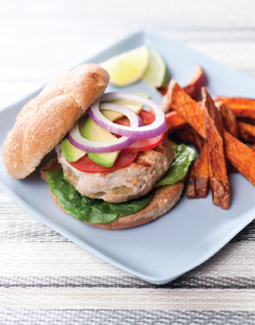
Southwestern Turkey Burgers with Sweet Potato Fries
Let the flavors of the Southwest transport you with burgers so full of flavor and fun you’ll need a pinch to remind yourself you aren’t scrapping your diet. The avocado slices replace the usual mayo and add richness and flavor. Topped off with baked sweet potato fries, this festive spa food feels positively indulgent.
SERVES 4
Calories per serving, turkey burger: 342
Calories per serving, sweet potato fries: 89
Sweet Potato Fries
2 sweet potatoes
1 tablespoon olive oil
½ teaspoon chili powder
½ teaspoon garlic powder
1/4 teaspoon salt, plus more for sprinkling
Juice of ½ lime
Turkey Burger
1 1/3 pounds lean ground turkey
4-ounce can diced green chiles, drained
1/4 teaspoon salt
1/4 teaspoon black pepper
2–3 spritzes canola oil in a mister
3 ounces 50%-reduced-fat pepper-jack cheese, cut into 8 thin slices
4 whole wheat kaiser rolls
Romaine lettuce leaves
Tomato, sliced
Red onion, sliced
½ avocado, sliced
1. FOR THE SWEET POTATO FRIES, preheat the oven to 425 degrees.
2. WASH and dry the potatoes and, with the skin on, slice into ½-inch thick rounds; cut the rounds into ½-inch thick finger-shaped pieces. Toss the potatoes in a bowl with the oil, chili powder, garlic powder, and salt.
3. ON A BAKING SHEET, spread the potato fries in a single layer and roast, stirring every 10 minutes, until brown and tender, 30 to 35 minutes. Remove from the oven, transfer to a platter or bowl and sprinkle with a little more salt.
4. MEANWHILE IN A LARGE BOWL, mix the lean ground turkey with the diced chiles and season with salt and pepper. Shape into patties and refrigerate until ready to cook.
5. HEAT a large grill pan or nonstick skillet on medium heat and spritz with canola oil. Add the turkey patties to the grill pan and cook until browned on one side, about 4 minutes. Flip, reduce the heat to low, cover (if using a skillet), and cook until the juices run pale pink, about 4 more minutes. Top with the reduced-fat pepper-jack cheese during the last minute.
6. TOAST the rolls in the oven or in a toaster oven. Alternatively, grill them 1 minute on each side.
7. TO ASSEMBLE: On a platter, place the fries and a burger on a bun and top with lettuce, tomato, onion, and avocado slices. Squeeze lime juice over the fries and serve.
Tip
Adding chopped vegetables, like the diced green chilies in this recipe, to lean ground turkey keeps the meat juicy and boosts flavor.
We love that this pasta dish is so easy to make and satisfying, yet has a fraction of the fat and calories you’d expect. Paired with a small salad, it’s the perfect weeknight meal.
SERVES 4
Calories per serving: 371
2 teaspoons olive oil, plus extra for serving
3 cloves garlic
½ cup chopped red onion
3/4 teaspoon salt
1 14-ounce can diced tomatoes or whole tomatoes in juice, pureed in a food processor
Pinch red pepper flakes
8 ounces penne
1/4 cup whipping cream
6 tablespoons evaporated nonfat milk
1/3 cup grated Parmesan cheese
1/4 cup shredded fresh basil
1/8 teaspoon black pepper
1. BRING a large pot of salted water to a boil for the penne.
2. IN A LARGE SAUCEPAN, heat the 2 teaspoons oil with the garlic over low heat until the garlic begins to brown, about 3 minutes. Add the onion and 1/4 teaspoon salt, cover, and cook until the onion is softened, about 2 more minutes. Add the tomato, ½ teaspoon salt, and the red pepper flakes. Bring to a simmer, reduce the heat and simmer very gently 10 minutes. Stir in the cream and evaporated milk and simmer 1 more minute.
3. MEANWHILE, after the sauce has cooked 5 minutes, add the penne to the boiling water and cook until just shy of al dente, about 6 minutes. Drain, reserving about ½ cup pasta water. Add the drained penne to the saucepan and simmer until the penne is al dente, 1 to 2 minutes, adding a little of the pasta cooking water if the mixture is dry. Stir in 1/4 cup of the Parmesan, the basil, and black pepper.
4. TO SERVE, divide pasta between 4 serving bowls. Drizzle each serving with ½ teaspoon olive oil, and sprinkle with the remaining Parmesan.
We slim down this classic French starter by using just a sliver of nutty Gruyere and don’t even miss the extra cheese. Same gooey melt, same transporting aroma, same warm comfort food.
SERVES 4
Calories per serving: 302
1/4 cup olive oil
2 large white onions, halved lengthwise and cut into 1/4-inch-thick slices crosswise
4 sprigs fresh thyme
2 bay leaves
1/4 teaspoon salt
1/4 teaspoon freshly ground pepper
1/3 cup dry white wine
4 cups low-sodium chicken stock
4 (1-inch-thick) slices whole wheat baguette, toasted and cooled
2 ounces Gruyere, shaved into paper-thin slices with a cheese plane or vegetable peeler
1. PREHEAT the oven to 400 degrees.
2. HEAT the oil in a large saucepan over medium heat. Add the onions, thyme, bay leaves, salt, and pepper and cook, stirring occasionally, until the onions are golden (not brown) and nearly melting, about 45 minutes. Stir in wine and simmer, stirring occasionally, until reduced by half. Stir in stock and simmer, stirring occasionally, for 15 minutes.
3. PLACE 4 soup crocks or ovenproof bowls (no larger than 4 inches round) on a rimmed baking sheet. Place a baguette slice in each crock. Divide the soup among the bowls and top each with a single layer of cheese slices.
4. TRANSFER to the oven and bake until cheese melts and is golden brown in spots and soup is bubbling, about 10 minutes. Serve immediately.
Tip
The high-calorie element of French onion soup is the traditional thick cap of Gruyere cheese. In this version, a very thin slice of Gruyere is melted on top of the soup to give the same taste, with fewer calories. Make sure to get good quality Gruyere and use a cheese planer for a super-thin slice.
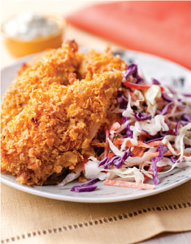
Oven-Baked Crispy Chicken Tenders with Coleslaw
Cornflakes give oven-“fried” chicken the crunchy crust we like, without the fat of frying, or sautéing. Marinating the chicken for an hour in a buttermilk marinade, with garlic and herbs, really boosts the flavor. The half-buttermilk/half low-fat sour cream “mayonnaise” is a slimmer innovation you can bring to lots of other dishes.
SERVES 4
Calories per serving, chicken with coleslaw: 519
Calories per serving, tartar sauce: 27
For the chicken:
2 cloves garlic, smashed
1/4 teaspoon dried thyme
1 bay leaf
2 teaspoons salt
1/4 teaspoon red pepper flakes
½ cup nonfat buttermilk
1 pound chicken tenders (about 12)
1 ½ cups cornflakes, crushed to medium crumbs
Nonstick cooking spray
For the tartar sauce:
1 ½ tablespoons low-fat sour cream
1 tablespoon nonfat buttermilk
Juice of ½ lemon
1/4 cup fresh parsley leaves, chopped
1 tablespoon drained nonpareil capers
1 tablespoon chopped sweet gherkin
1 tablespoon water
For the coleslaw:
1 ½ (10 ounce bags) cabbage slaw mix
1 red bell pepper, sliced thin
2 tablespoons thin-sliced red onion
2 tablespoons shredded fresh basil leaves, plus whole leaves, for garnish
2 tablespoons shredded fresh mint, plus whole leaves, for garnish
1 tablespoon low-fat sour cream
1 tablespoon nonfat buttermilk
1 tablespoon seasoned rice wine vinegar
2–3 dashes hot pepper sauce
1/8 teaspoon salt
1/8 teaspoon pepper
8 cherry tomatoes, quartered, for garnish
1. PREHEAT the oven to 400 degrees. Line a baking sheet with aluminum foil and spray lightly with cooking spray. Set aside.
2. FOR THE CHICKEN: In a medium bowl, combine the garlic, spices, and buttermilk. Add the chicken and turn in the marinade. Cover and refrigerate 1 hour.
3. FOR THE COLESLAW: In a large bowl, combine the cabbage slaw mix, bell pepper, onion, and shredded herbs. In a separate smaller bowl, whisk together the sour cream, buttermilk, vinegar, hot pepper sauce, salt, and pepper. Pour the dressing over the vegetables and toss to coat.
4. FOR THE TARTAR SAUCE: Whisk together all of the ingredients in a separate small bowl.
5. PLACE the cornflake crumbs on a plate. Drain the chicken tenders. Pick up a chicken tender with one hand, and turn it in the cornflake coating, using the other hand to gently press additional coating onto the sides. Place on the prepared baking sheet. Continue on in this way to coat all of the chicken pieces, arranging them on the baking sheet in a single layer. Bake at 400 degrees until firm, about 15 minutes.
6. TO SERVE, divide the coleslaw between 4 bowls. Arrange 3 chicken tenders, standing up with wide ends at the bottom and overlapping slightly, at one side of each mound. Drizzle the sauce over the chicken. Garnish bowls with chopped cherry tomatoes, and fresh herbs.
We’ve always loved this classic salad, and we love it even more now that it’s been spruced-up so well. Arugula, seared chicken breast, and nutty sunflower seeds, plus the nearly fat-free yogurt and mustard dressing really gives this dinner salad bite. A soft boiled egg is an indulgent touch!
SERVES 2
Calories per serving: 445
For the salad:
8-ounce chicken breast, skinless
A little olive oil to brush onto the chicken
4 thin (melba thin) slices baguette on the diagonal
A little olive oil to brush onto the toast before crisping in hot oven
½ medium garlic clove
2 heads baby romaine lettuce
1 soft-boiled, large, free-range egg, at room temperature
One handful of arugula and mustard cress
2 tablespoons finely grated Parmesan
1 tablespoon sunflower seeds
For the dressing:
2 tablespoons fat-free Greek yogurt
The other ½ garlic clove
1 teaspoon Dijon mustard
1 teaspoon malt vinegar
1 tablespoon olive oil salt and black pepper
1. PREHEAT oven to 350 degrees.
2. BRUSH the chicken with a little olive oil.
3. ON A HOT GRILL PAN, sear the chicken breast for 4 to 5 minutes before flipping over and doing the same on the other side.
4. WHILE THE CHICKEN IS SEARING, prepare the baguette toasts. Slice the baguette on the diagonal and place on a baking sheet. Brush on a little olive oil. Toast the bread for about 10 minutes, until crisp. Rub with the garlic clove.
5. ONCE YOU HAVE STRONG GRILL MARKS over the chicken breast on both sides, cover your pan with foil and place into the hot oven on the higher shelf for 15 minutes.
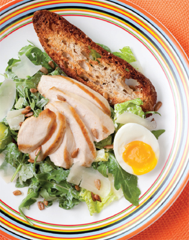
6. MEANWHILE, wash the lettuce and spin dry.
7. CAREFULLY DROP the egg in boiling water for 5 minutes exactly. Empty the boiling water out of the pan and replace it with cold water. Let the egg stand in the cold water while you finish the recipe.
8. TO MAKE THE DRESSING, combine all the ingredients into a small mixing bowl and stir together with a whisk. Taste and season before setting aside.
9. PUT the washed and dried salad leaves into a big bowl with the dressing. Toss for a couple of minutes to make sure that all the leaves are coated. Add the shaved/grated Parmesan and arugula. Toss once again.
10. REMOVE the chicken from the oven and let it cool down enough to handle before slicing on the diagonal.
11. PLATE UP THE SALAD, making sure that the chicken is evenly distributed.
12. TUCK the crispy baguette toasts on the side of the salad and add half a soft-boiled egg. Finally grind over some black pepper, scatter the sunflower seeds, and serve.
Spinach and Mushroom Veggie Lasagna
This indulgent three-layer vegetable lasagna redefines delicious. We added sautéed mushrooms in place of the ground beef, and cut calories by removing half the mozzarella cheese, but keeping it where you’ll taste it most—as a gooey top layer. Plus, we’ve added plenty of fresh basil, oregano, and thyme, adding vivid flavor without the fat.
MAKES 12 SERVINGS
Calories per serving: 337
2 tablespoons olive oil
1 ½ pounds cremini and/or shiitake mushrooms, sliced
1 teaspoon dried thyme
Kosher salt
1 15-ounce container part-skim ricotta
3/4 cup skim milk
2 eggs, lightly beaten
3 cups shredded, part-skim mozzarella cheese, divided evenly
3/4 cup grated Parmesan cheese
1 10-ounce box frozen chopped spinach, defrosted and drained
1/3 cup chopped fresh basil, plus more to garnish
1 teaspoon dried oregano
Freshly ground black pepper
5 cups tomato sauce
12 sheets no-cook lasagna noodles
Nonstick cooking spray
1. PREHEAT the oven to 375 degrees.
2. HEAT the olive oil in a large skillet over medium-high heat. Add the mushrooms and thyme and season with salt. Cook until softened, about 10 to 12 minutes.
3. IN A MEDIUM BOWL, combine the ricotta, milk, and eggs and stir. Add 1 cup of mozzarella, Parmesan, spinach, basil and oregano; season with salt and pepper and stir to incorporate.
4. SPREAD 1 cup of tomato sauce in the bottom of a 9-by-13-by-2-inch pan. Layer 4 sheets of lasagna on top, slightly overlapping. Spread half the ricotta mixture on the noodles, and cover with half the mushroom mixture. Top with 1 ½ cups tomato sauce. Repeat with 4 sheets of lasagna pasta, remaining ricotta mixture, remaining mushrooms, and 1 ½ cups tomato sauce. Cover with the remaining 4 sheets of lasagna, the remaining cup of tomato sauce, and the remaining mozzarella cheese.
5. LIGHTLY COAT a sheet of aluminum foil with nonstick spray and cover the uncooked lasagna, spray-side down. Bake at 375 degrees, covered, until bubbly, about 45 minutes. Remove foil from lasagna and increase the oven temperature to 450 degrees. Cook until cheese browns, about 12 minutes. Remove from the oven and let stand for 15 minutes before cutting. Serve warm and garnish with basil.
Tip
To lower the calories, reduce the mozzarella to 2 cups and the grated Parmesan to 3/4 cup.
Pasta Bake with Sausage, Broccoli, and Beans
Turkey sausage trims down this classic Italian combination, while beans deliver protein and fiber. Make it deliciously creamy and tangy with skim milk ricotta and tangy Pecorino.
SERVES 8
Calories per serving: 529
½ teaspoon salt
1 large head of broccoli, about 1 ½ pounds, cut into small florets
3 cloves garlic, peeled
3/4 pound rigatoni
1 tablespoon olive oil, plus more for pan
1 pound Italian-style turkey sausage with fennel (removed from casing if uncooked, or sliced thinly if precooked)
1 can cannellini or great northern beans, rinsed and drained
2/3 pound of skim mozzarella, grated, 1/4 cup reserved
3/4 cup skim ricotta cheese
½ cup chicken stock
½ cup Pecorino Romano cheese, finely grated, 1/4 cup reserved
1 teaspoon salt
½ teaspoon ground pepper
3 tablespoons breadcrumbs
1 tablespoon olive oil
1. PREHEAT oven to 375 degrees. Lightly oil a 9-by-13-inch gratin or baking dish.
2. IN A SEPARATE POT, bring water to a boil and add ½ teaspoon of salt, broccoli, and garlic. Simmer the broccoli and garlic for 5 minutes, until softened. With a slotted spoon remove the broccoli and garlic to a large bowl. Bring the water back to the boil, add the pasta, and cook the pasta for about 2 minutes less than the package directions suggest, about 11 minutes. The pasta should be al dente, a little firm.
3. MEANWHILE, in a large dutch oven set over medium high heat, heat the oil. Add sausage and the garlic cloves from the broccoli bowl, and cook, stirring frequently until meat is fully cooked and no longer pink, about 4 to 5 minutes, if using fresh sausage. (If using fully cooked sausage cook until surface is golden, about 2 to 3 minutes.) With a slotted spoon, transfer sausage to the broccoli, and drain most of oil from the pan, leaving about 2 tablespoons. Discard the garlic.
4. TOSS drained pasta with sausage mixture. Add beans, stock, 3/4 cup of grated mozzarella cheese, and all of the ricotta. Add remaining salt and pepper. Gently toss. Transfer to prepared gratin or baking dish, top with breadcrumbs, remaining 1/4 cup of grated cheese and 1/4 cup mozzarella cheese and drizzle with olive oil.
5. IF MAKING THIS IN ADVANCE, allow the mixture to come to room temperature, cover with plastic wrap and place in the refrigerator.
6. BAKE for 25 minutes, until heated through and crusty on top.
Tips
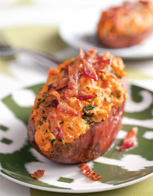
No one’s ever accused potato skins of being healthy—until now! Turkey bacon, spinach, and nutty, nutritious sweet potatoes are the stars in this low-fat version of the greatest snack food ever.
SERVES 2
Calories per serving: 420
2 medium sweet potatoes
1 teaspoon olive oil
1 small onion, diced
1 clove garlic, minced
1 bag baby spinach (about 9 ounces)
2 scallions, thinly sliced
2 slices turkey bacon
4 ounces low-fat cream cheese
1/4 cup low-fat buttermilk
1 teaspoon salt
1/4 teaspoon freshly ground black pepper
1 teaspoon vegetable oil
2 tablespoons grated Parmesan cheese
1. PREHEAT the oven to 350 degrees.
2. PLACE sweet potatoes on a baking sheet and onto an oven rack. Bake at 350 degrees for 45 minutes or until fork tender.
3. MEANWHILE, in a deep sauté pan heat the olive oil and cook the onion for 2 to 3 minutes until soft. Add the garlic and cook for one more minute. Add the entire bag of spinach and scallions, cover, and cook 3 to 4 minutes until the spinach has wilted.
4. IN ANOTHER SAUTÉ PAN cook the turkey bacon until crisp and transfer to a plate lined with paper towels to drain. When cooled, chop the bacon into small pieces and reserve.
5. WHEN THE SWEET POTATOES ARE COOKED, let them cool for 5 minutes. Carefully slice each one in half and scoop out inside of potato into a bowl. Add cream cheese, buttermilk, salt, and pepper and mash together until smooth.
6. USING A PASTRY BRUSH, coat the outside of each potato skin with the vegetable oil. Fill each of the shells with the filling and top with a sprinkle of Parmesan cheese. Transfer each skin back to the baking sheet and cook for 15 to 20 minutes or until the top is golden brown and the skins are crispy. Top with bits of turkey bacon and serve.
Tip
Quarter the potatoes to serve as a starter or light snack.
Easy Herb-Roasted Chicken with Roasted Veggies
It’s hard to imagine a more satisfying meal than roasted chicken and vegetables, and this version—with its fragrant chicken, red and golden beets, and an optional tantalizing drizzle of heady white truffle oil—just might be the best version of all.
SERVES 4
Calories per serving: 403
For the roasted chicken:
1 3.5-to 4-pound whole chicken
1 clove garlic, minced
1 tablespoon fresh thyme leaves, chopped
1 tablespoon fresh sage, chopped
2 tablespoons fresh rosemary, chopped
Rosemary stems
Salt, to taste
Pepper, to taste
2 tablespoons olive oil
1 lemon, sliced
For the roasted root vegetables:
1/4 pound golden beets, peeled and stems trimmed
1/4 pound red beets, peeled and stems trimmed
1/4 pound whole baby carrots, peeled and stems trimmed
2 tablespoons olive oil
1 tablespoon white truffle oil
Salt, to taste
Pepper, to taste
1 teaspoon fresh rosemary
1 teaspoon fresh thyme
1. PREHEAT the oven to 475 degrees.
2. WASH the chicken and pat dry with paper towels. Season the cavity with salt and season the outside of the chicken with salt and pepper.
3. IN A BOWL, mix together the garlic, thyme, sage, rosemary, and olive oil. Rub into the cavity of the chicken as well as the outside.
4. PLACE the rosemary stems inside the cavity and squeeze the lemon juice inside as well. Leave the slices inside and place the chicken in a roasting pan. Cook in the oven at 475 degrees for 1 to 1 ½ hours or until the chicken is golden brown and the juices run clear. Remove from the oven and let sit for 10 minutes before carving.
5. TO MAKE THE ROASTED ROOT VEGETABLES: Place the vegetables in a large mixing bowl and season with salt and pepper. Drizzle with the olive oil and an optional drizzle of white truffle oil and place in a roasting pan or on a baking sheet. Sprinkle the fresh herbs over the vegetables and roast in the oven for 45 minutes, turning once halfway through the cooking time. Serve with the roast chicken.
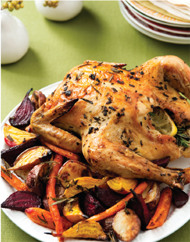
Tip
Truffle oil is costly, but a little goes a long way to add a deep heady fragrance to potatoes or pasta.
We say bring on the veggies in this gorgeous pasta dish. Asparagus and scallions bring a hint of spring to balance out a medley of earthy mushrooms.
SERVES 4
Calories per serving: 445
3/4 pound standard, whole wheat, or whole grain penne
1 pound (1 bunch) medium asparagus, tough bottom stems broken off and discarded, remainder cut into 1 ½-inch sections
1 (15-ounce) can chicken stock
1/4 teaspoon salt
Pepper, to taste
1 ½ tablespoons, plus
2 teaspoons olive oil
4 cloves garlic, sliced
1/4 red onion, chopped small
1/8 teaspoon red pepper flakes
4 ounces shiitake mushrooms, stemmed and sliced
4 ounces cremini mushrooms, trimmed and cut into quarters or sixths, depending on size
1 cup frozen peas
2 pieces sun-dried tomatoes
2 tablespoons chopped fresh parsley
½ cup grated Parmesan cheese
6-ounce bag baby spinach
2 scallions, chopped
1. BRING a large pot of salted water to a boil for the pasta.
2. COMBINE the asparagus, 1/4 cup of stock, and 1/4 teaspoon salt in a large skillet. Cover, and cook over medium heat, until al dente, 3 to 5 minutes. Transfer to a bowl with any remaining stock. Set aside.
3. IN THE SAME SKILLET, heat the oil with the garlic and onion over low heat. Cover and cook until the vegetables soften but do not brown, 3 to 4 minutes. Stir in the red pepper flakes. Add the mushrooms, and raise the heat to medium-high. Cook until the mushrooms are lightly browned and softened, about 5 minutes. If mushrooms begin to stick to the bottom of the pan, add 2 tablespoons stock and stir to release. Add the peas, the rest of the stock, and 1 tablespoon of the parsley. Remove from the heat and set aside.
4. ADD the pasta to the boiling water and cook about two-thirds of the way, about 6 minutes.
5. REMOVE 1 cup of pasta water and add it to the skillet with the vegetables. Drain the pasta in a colander, and add it to the skillet. Bring liquid to a boil; cook until reduced by about one-half. Add all but about 2 tablespoons of the Parmesan cheese, the asparagus, ½ teaspoon salt, 1/4 teaspoon pepper, and the spinach. Cook, tossing with tongs, until the liquid is reduced and thickened and the spinach is wilted, 1 to 2 minutes.
6. DIVIDE the pasta between 4 bowls, and sprinkle with scallions and sun-dried tomatoes. Drizzle each with ½ teaspoon oil, and sprinkle with the remaining cheese.
Tips
Southwestern flavors and a hint of cocoa blend with dynamic results in this chili we whip up for all our casual get-togethers. Ground turkey masquerades as beef with a fraction of the fat and the illusion continues with fat-free yogurt cooling the chipotle instead of sour cream.
SERVES 6
Calories per serving: 355
1 tablespoon olive oil
1 pound ground turkey
Salt
Pepper
2 teaspoons chili powder
1 teaspoon ground cumin
1 teaspoon dried oregano
Pinch ground cinnamon
½ red onion, chopped (about 1 cup)
3 cloves garlic, chopped
2 carrots, diced (½ inch), about 1 cup
1 can (14-ounce) chopped whole tomatoes, with juice
½ chipotle pepper in adobo, seeded and chopped, with about
½ teaspoon adobo sauce
3 cups water
1 tablespoon cocoa powder
2 (14-to 15-ounce) cans pinto beans, drained and rinsed
½ cup chopped cilantro (leaves and slender stems), plus 1/4 cup for serving
Bittersweet chocolate, grated, for serving
3 scallions, chopped, for serving
½ cup nonfat yogurt, for serving
Tortilla chips, for garnish
1. IN A LARGE, heavy-bottomed saucepan, heat the oil over medium heat. Add the turkey, ½ teaspoon salt, and 1/4 teaspoon pepper and cook, stirring, 3 minutes. Add the chili powder, cumin, oregano, and cinnamon, and cook, stirring, 3 minutes, or until the water evaporates and the turkey sizzles.
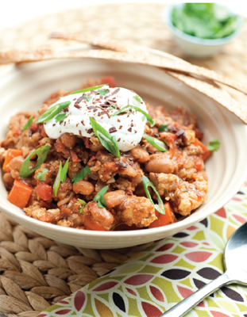
2. ADD the onion, garlic, and ½ teaspoon salt. Cover and cook until the onion is wilted, 5 to 7 minutes. If the onion or the spices begin to stick to the pan, add 2 tablespoons water and scrape with a wooden spoon to release.
3. ADD the carrots, tomatoes, chipotle pepper, water, and cocoa powder. Bring to a simmer, reduce the heat to low, and cook, partially covered, 25 minutes. Stir in the beans and ½ cup cilantro and cook 15 more minutes.
4. SPRAY a whole wheat tortilla with cooking spray and season with salt and pepper (or cayenne and ground cumin). Slice thinly and bake in a preheated 400 degree oven for 5–10 minutes until crispy.
5. TO SERVE, ladle into soup bowls and grate a tiny amount of chocolate over each. Top with scallions, the remaining cilantro, a spoonful of yogurt, and some grated chocolate! Garnish with tortilla chips.
Scrumptious Skinny Spaghetti and Meatballs
Meatballs are as versatile as they are classic, either with pasta and sauce, on toasted whole grain bread for a sandwich or even on their own served with a dash of chutney. You limit the fat by choosing lean meats. You’re in control.
SERVES 4
Calories per serving: 560
2 12-ounce to 14-ounce jars of your favorite marinara sauce
2 slices of your favorite sandwich bread
3/4 cup water
1/3 pound ground veal
1/3 pound ground pork
1/3 pound ground turkey
½ cup grated Parmesan cheese, plus more for serving
1 large egg
½ small onion, finely minced
1/3 cup chopped parsley
2 tablespoons chopped basil
1 teaspoon oregano
1 teaspoon salt
1/4 teaspoon red pepper flakes
8 ounces whole wheat spaghetti
1. HEAT marinara sauce in a large, wide pot over medium heat. Cover to prevent splattering.
2. REMOVE crusts from bread, place bread in a medium bowl and pour water over. Let sit 10 minutes, and gently squeeze out excess liquid. Put bread in a large bowl, discard water.
3. ADD all the ground meats, cheese, egg, onion, parsley, basil, oregano, salt, and red pepper flakes to bowl with bread. Gently toss to combine, maintaining a light touch to keep air in the meatballs (don’t squish the meat too much, or you’ll end up with tough meatballs). Roll the meat mixture in your hands to create meatballs slightly larger than a golf ball.
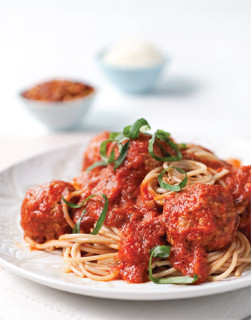
4. REMOVE marinara sauce from heat to prevent splattering, gently drop the meatballs in the warm sauce. Return tomato sauce to medium-low heat, bring to a simmer and cook, covered, until meatballs have cooked through, about 30 minutes.
5. COOK pasta according to package, toss with marinara sauce, and top with meatballs.
Tip
Make your own marinara. Heat 1 tablespoon olive oil and sauté 2 cloves minced garlic until lightly golden. Add 32 ounces of canned, peeled, crushed plum tomatoes and simmer for 10 minutes. Add meatballs, 2 tablespoons of torn fresh basil leaves, and season with 1½ teaspoons salt and ½ teaspoon pepper. Cook for 30 minutes.
Mushroom and Spinach Quiche with Potato Crust
Elevate your lunch to a whole new level with our creative spin on quiche. A crunchy potato crust replaces the traditional butter laden pastry shell, leaving you with just as much flavor, but far fewer calories! We like to fill ours with a healthy dose of veggies and sprinkle of cheese, but you can adapt this recipe to suit just about any palate. Serve with a side salad and enjoy!
SERVES 8
Calories per serving: 210
½ pound Yukon Gold potatoes, peeled and shredded
31/4 teaspoons olive oil
½ teaspoon salt
½ teaspoon pepper
1 onion, diced
8 ounces white mushrooms, sliced
5-ounce bag baby spinach
3 large eggs
1 cup skim milk
1 ounce Gruyere or cheddar cheese, shredded in a food processor, or on the large holes of a grater
1. PREHEAT oven to 400 degrees.
2. LIGHTLY GREASE a 9-inch glass or ceramic pie dish with 1/4 teaspoon oil. Toss potatoes with 1 teaspoon oil and 1/8 teaspoon each salt and pepper. Press into an even layer in a pie dish, up the sides like a crust. Bake until golden brown at the edges and dry, about 20 minutes. Let cool.
3. LOWER THE OVEN to 325 degrees. Heat 1 teaspoon oil in a large skillet, preferably nonstick, over medium heat. Add onion and cook until softened and golden, about 5 minutes. Add remaining teaspoon oil and mushrooms and cook, stirring, until mushrooms release their liquid and most of the liquid evaporates, about 8 minutes. Add spinach and 1/4 teaspoon each salt and pepper, and cook, stirring, just until spinach wilts, about 30 seconds. Let cool slightly.
4. WHISK together eggs, milk, and remaining 1/8 teaspoon salt and pepper. Spread the mushroom mixture in an even layer in the pie dish, and top with an even layer of the cheese. Carefully pour in egg mixture. Bake until firm around the edges, but still wobbly in the center, about 20 minutes. Let cool, and serve warm or at room temperature.
Tips
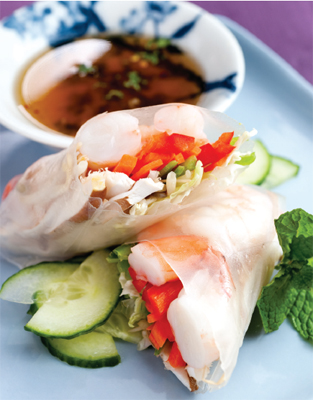
Spring Rolls with Lemongrass Dipping Sauce and Cucumber Salad
Low-fat and delicious come naturally to the dynamic flavors of Southeast Asia, and these spring rolls with lemongrass dipping sauce make that abundantly clear. It’s a festival of fresh as shrimp and veggies get to show off amid garlic, ginger, mint, and bright rice vinegar.
MAKES 6 ROLLS
Calories per serving, 2 spring rolls: 104
Calories per serving, lemongrass dipping sauce: 63
Calories per serving, cucumber salad: 39
For the lemongrass dipping sauce:
½ cup rice vinegar
½ cup honey
1 stalk lemongrass, minced
2 garlic cloves, minced
1 tablespoon ginger, minced
1 teaspoon red chili flakes
For the cucumber salad:
1 English (hothouse) cucumber
1 tablespoon mirin
1 tablespoon sesame oil
1 tablespoon rice vinegar
Salt, to taste
For the spring rolls:
1 tablespoon sesame oil
1 tablespoon ginger, minced
1 tablespoon garlic, minced
½ pound medium shrimp (about 12 to 13)
1 tablespoon mirin
1 tablespoon soy sauce
For the assembly:
6 Vietnamese rice paper wraps, soaked in cold water for 50 seconds
2 ounces red bell pepper, julienne
½ large carrot, shredded (about 2 ounces)
2 cups bean sprouts
2 ounces sugar snap peas, julienne
Reserved shrimp, from above
2 ounces shiitake mushrooms, thinly sliced
6 teaspoons mint, chiffonade (shredded), for garnish
2 tablespoons scallions, green parts only, sliced on the bias, for garnish
1. FOR THE LEMONGRASS DIPPING SAUCE: In a small stainless steel saucepan over medium heat, combine the rice vinegar and honey. Bring to a boil and reduce to a simmer. Cook for about 10 to 15 minutes or until it reaches a syrupy consistency. Remove from the heat and add the minced garlic, ginger, and chili flakes and let steep until cooled, about another 30 minutes. Set aside and reserve.
2. FOR THE CUCUMBER SALAD: Wash and cut the English (hothouse) cucumber in half, lengthwise. Slice into thin half-moons and transfer to a bowl.
3. IN A SEPARATE SMALLER BOWL, whisk together the mirin, sesame oil, and rice vinegar. Season to taste with salt. Drizzle the dressing over the sliced cucumber and toss. Refrigerate until ready to serve.
4. FOR THE SHRIMP: Over medium to high heat, place the sesame oil, minced ginger, garlic, and the shrimp. Cook until the shrimp are pink and not too firm. Add the mirin and let it reduce. Add the soy sauce and cook another minute. Let cool and set aside.
5. FOR THE ASSEMBLY: Soak the rice wrappers in cold water for 45 seconds or until pliable. Be careful not to rip the wrappers when removing from the water. Place on cutting board lined with a clean dish towel and spread evenly.
6. PLACE some red bell pepper strips, shredded carrots, bean sprouts, shiitake mushrooms, sugar snap peas, two reserved shrimp, and 1 teaspoon of shredded mint on each wrapper. Start wrapping at one end and roll over once, then bring in both ends and continue to roll making sure the filling remains inside and fits snugly. Continue with remaining wrappers and filling.
7. CUT each spring roll on the bias and serve with the cucumber salad and the lemongrass dipping sauce. Garnish with sliced scallions.
Sesame noodles are always on our minds when we order in Chinese food, so we gave this Asian mainstay a makeover by adding slaw and jicama to bring in the crunch.
SERVES 6
Calories per serving: 308
For the noodles:
8 ounces whole wheat spaghetti
For the dressing:
2 tablespoons rice vinegar
1/4 cup low-sodium soy sauce
1/4 cup peanut butter
2 tablespoons grated ginger
1 tablespoon dark sesame oil
1 teaspoon brown sugar
Juice of one lime
½ cup water, hot
For the assembly:
½ bag store-bought coleslaw mix
½ cup red pepper
½ cup cilantro, chopped
½ a lime, squeezed
½ cup apple
½ cup jicama
1 teaspoon toasted sesame seeds
2 scallions, julienne
For the garnish:
½ cup dry-roasted peanuts, for garnish
Cilantro, chopped
Lime wedges
1. BRING a pot of water to a boil for the pasta and cook the pasta according to package instructions. Drain and run under cold water.
2. TO MAKE THE DRESSING, combine all the ingredients into a small mixing bowl and stir together with a whisk. Add the dressing to the pasta and toss. Stir in the coleslaw mix, red pepper, and cilantro. Squeeze a half of a lime over and toss.
3. ADD the remaining ingredients, toss and refrigerate for one hour. Garnish with dry-roasted peanuts, chopped cilantro, and lime wedges. Serve.
Chicken and Bean Burritos with Pineapple Salsa
Juicy poached chicken and lots of veggies stuff this smart burrito full of flavor without maxing out your calories. Top it off with a squirt of lime and some low-fat cheese, and dig in.
SERVES 4
Calories per serving, chicken and bean burritos: 436
Calories per serving, pineapple salsa: 28
For the chicken and bean burritos:
1 cup fresh or frozen corn kernels, thawed and drained, if frozen
1 (15 ½-ounce) can black beans, drained and rinsed
½ cup fresh cilantro leaves, chopped
1 ½ tablespoons fresh lime juice
1 teaspoon minced fresh jalapeño (optional)
1/4 teaspoon salt
1/8 teaspoon cayenne pepper
3/4 pound bone-in, skin-on split chicken breasts
3 peppercorns
1 carrot, sliced
1 bay leaf
3 medium tomatoes, 2 quartered, 1 diced
1 white onion, quartered 6 garlic cloves
1 ½ teaspoons vegetable oil
4 medium flour tortillas
1/4 cup shredded low-fat cheddar
1/4 cup shredded iceberg lettuce
For the pineapple salsa:
1 cup ripe pineapple, chopped
1/4 cup red onions, chopped
1/4 cup roasted red bell pepper, chopped
1 tablespoon fresh cilantro, chopped
1 tablespoon fresh lime juice
1. HEAT a medium skillet over medium heat. Add the corn and cook, shaking the pan occasionally, until browned, about 5 minutes. Transfer to a medium bowl. Add beans, cilantro, lime, jalapeño, salt, and cayenne, and stir until well mixed; set aside.
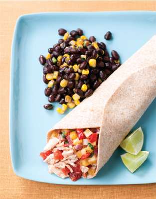
2. PUT the chicken, peppercorns, carrot, bay leaf, and 3 of the garlic cloves in a large saucepan and add enough water to cover by 2 inches. Bring to a boil, then simmer over medium heat until cooked through, about 25 minutes. Let cool slightly in the broth. Remove the chicken from the broth, and remove the skin and bones. Shred the chicken into small pieces, and return the meat to the broth.
3. PUT the quartered tomatoes, onion, and garlic in a blender and blend until smooth. Heat the oil in a large, deep skillet over medium-high heat. Add the tomato mixture and cook, stirring until thickened and fragrant, about 5 minutes. Using a slotted spoon, transfer the shredded chicken to the tomato mixture. Stir until well mixed.
4. HEAT a large skillet over medium heat. Warm the tortillas, one at a time, until pliable, about 1 minute. Divide the cheese, lettuce, diced tomato, bean mixture, and chicken with its sauce among the tortillas, spreading the ingredients in a line down the center. Fold in the top and bottom, then roll in the sides. Serve immediately.
5. TO MAKE THE PINEAPPLE SALSA: Place all the ingredients in a bowl and mix together. Set aside.
Tips
This personal pie gets its pizzeria credentials from roasted red peppers, basil-flecked chicken sausage, and a sprinkle of Parmesan cheese.
SERVES 1
Calories per serving: 475
1 teaspoon olive oil
1/4 tablespoon minced garlic
1/4 cup organic tomato sauce
1/8 teaspoon salt
Pinch pepper
1 chicken basil sausage link precooked
Salt, to taste
Pepper, to taste
½ red bell pepper—jarred roasted red peppers work and are a great time-saver
4 ounces prepared pizza dough
2 tablespoons shredded Parmesan cheese
1 tablespoon chopped scallion, white and green parts
1 teaspoon coarsely chopped fresh basil (optional)
1. PREHEAT the oven to 450 degrees.
2. FOR THE TOMATO SAUCE, heat oil in a small saucepan over medium heat, add garlic and cook for 1 minute. Add tomato sauce, salt, and pepper and simmer for 4 to 5 minutes.
3. PREHEAT a gas grill or stovetop grill pan over medium high heat. Place chicken basil sausage and bell pepper on the grill. Grill the sausage until cooked through, about 2 minutes each side; set aside. Continue grilling the pepper, turning, until the skin is blackened, 10 to 15 minutes.
4. PLACE pepper in a bowl, cover with plastic wrap, and let stand until cool enough to handle. Peel, stem, and seed the pepper; cut or tear half the pepper into large dice, reserve the other half roasted pepper for another dish. When chicken sausage is done slice thinly and set aside.
5. SPRAY an aluminum pizza pan with nonfat cooking spray. On a lightly floured surface, use your hands to stretch the pizza dough into a thin round, about 8 inches. Place it in the prepared pan. Spread the dough with the tomato sauce. Sprinkle with half of the cheese. Arrange the sliced chicken sausage on top, and scatter the pepper over. Sprinkle with the remaining cheese.
6. BAKE until the edges are crisp and lightly browned, and the cheese is melted, about 10 to 12 minutes. Remove from oven, and sprinkle with scallions and basil, if using. Let pizza stand about 2 to 3 minutes before eating.
This lunchtime favorite gets a low calorie makeover by using yogurt and buttermilk in place of mayonnaise for a creamy blue cheese dressing. Substitute sliced ham for bacon and cut the calories even more!
SERVES 4
Calories per serving: 471
2 tablespoons fresh lemon juice
1/4 cup finely chopped fresh flat-leaf parsley
1 tablespoon olive oil, plus more for oiling grill
1/4 teaspoon salt
½ teaspoon pepper
1 pound chicken breasts, pounded to an even 1/3-inch thickness
1 ounce crumbled blue cheese (about 1/4 cup)
1/4 cup plain nonfat yogurt
2 tablespoons nonfat or low-fat buttermilk
1 head romaine lettuce, chopped
2 thin slices low-sodium ham, sliced
1/4 cup shredded sharp cheddar cheese
2 avocados, seeded, peeled, and cut into ½-inch cubes
2 tomatoes, cut into ½-inch cubes
2 scallions, sliced
1. WHISK together lemon juice, parsley, oil, salt, and 1/4 teaspoon pepper in a large, shallow dish. Add chicken, turning to coat, and marinate for at least 2 hours and up to overnight.
2. PREHEAT a grill to medium or heat a well-seasoned grill pan over medium heat. Lightly oil grill grate or pan. Grill chicken, turning to create crosshatch marks, until cooked through, about 10 minutes total. Let stand for 10 minutes, then cut into ½ inch cubes.
3. STIR together blue cheese, yogurt, buttermilk, and remaining 1/4 teaspoon pepper. Pour over lettuce and toss until well coated. Divide lettuce among 4 serving dishes. Divide ham, cheddar cheese, avocados, tomatoes, scallions, and chicken cubes among dishes, arranging each ingredient in a line to create a rainbow of toppings. Serve immediately.
Tip
Yogurt and buttermilk stand in for mayonnaise in the blue cheese dressing.
Sautéed Tequila Lime Shrimp Tacos with Mango and Pineapple Salsa and Spicy Black Beans
Redolent with spices, kissed by chiles, and with a hint of tequila, these shrimp tacos are the perfect bite. Light but satisfying, served with spicy black beans and a mango and pineapple salsa, they make us wish every day was Cinco de Mayo.
SERVES 4
Calories per serving, shrimp tacos: 413
Calories per serving, mango and pineapple salsa: 76
Calories per serving, spicy black beans: 110
For the shrimp tacos:
2 to 4 tablespoons olive oil
1 garlic clove, chopped
½ teaspoon ground cumin
Pinch red pepper flakes
1 pound medium shrimp, deveined
3 tablespoons high-quality tequila
Salt, to taste
1 teaspoon dried chipotle powder
2 to 3 tablespoons cilantro, chopped
4 whole wheat tortillas
For the mango and pineapple salsa:
1 large, ripe mango, chopped
1/4 cup red onions, chopped
1/4 cup red bell pepper, chopped
1 8-ounce can pineapple tidbits in juice, drained
1 tablespoon freshly squeezed lime juice
1 to 2 tablespoons cilantro, chopped
Salt, to taste
For the spicy black beans:
2 tablespoons olive oil
2 tablespoons onion, chopped
1 garlic clove, chopped
1 tablespoon ground cumin
1 14-ounce can black beans
2 tablespoons red pepper flakes
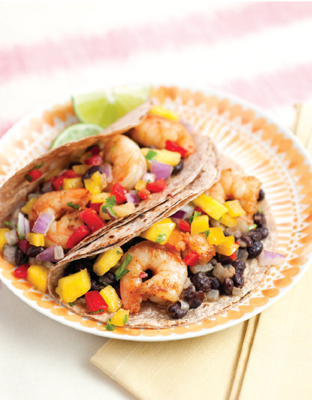
1. TO MAKE THE SHRIMP TACOS: In a large skillet over medium heat, add the olive oil. Add the chopped garlic and cook for about 1 minute. Add the cumin and red pepper flakes and let the flavors blend together. Add the shrimp and toss. Carefully add the tequila and flambé. Season with salt and add the dried chipotle powder. Once shrimp are cooked, add the chopped cilantro and toss.
2. IN A SEPARATE NONSTICK SKILLET over low heat, heat a whole wheat tortilla until pliable, about 2 minutes on each side.
3. PLACE one tortilla per person and serve three shrimp in each taco.
4. TO MAKE THE SPICY BLACK BEANS: In a saucepan over medium heat, add the olive oil, chopped onion, and chopped garlic clove. Sweat the onions for about 2 minutes. Add the cumin and the black beans. Stir and add the red pepper flakes. Simmer for about 5 minutes.
5. TO MAKE THE MANGO AND PINEAPPLE SALSA: Peel the mango and chop into small dice and place in a bowl. Chop the yellow and red bell peppers and add to the bowl with the mango. Add the drained pineapple tidbits and chopped red onion and toss together. Squeeze some lime juice over and toss. Add the chopped cilantro, salt to taste, and toss. Refrigerate until ready to serve.
Mango-Glazed Salmon with Spinach Salad
We love salmon because it’s easy and always hits the spot, especially with this Asian-accented mango glaze. It’s just perfect sitting atop a spinach salad freshened up with pear, bean sprouts, and toasted sliced almonds.
SERVES 2
Calories per serving: 478
For the salmon:
2 tablespoons soy sauce
1 teaspoon minced ginger
1 (3-inch) cinnamon stick
1 teaspoon rice vinegar
5 ounces mango nectar
2 (6-ounce) salmon fillets, about 1-inch thick
For the spinach salad:
1 bunch fresh spinach
1 thinly sliced Bosc pear
Shredded carrots
Asian bean sprouts
2 tablespoons toasted sliced almonds (optional)
For the dressing:
3 tablespoons rice vinegar
1 tablespoon sesame oil
1 teaspoon ginger (fresh grated)
1 tablespoon orange juice
1. TO MAKE THE SALMON: Stir together first 5 ingredients in a small saucepan. Bring to a boil; reduce heat, and simmer, uncovered, 15 minutes or until reduced by half. Pour mango mixture through a wire-mesh strainer; discard solids. Return mango mixture to saucepan; keep warm.
2. PLACE salmon on a rack in a broiler pan coated with cooking spray. Broil 5½ inches from heat 5 minutes. Brush fish with ½ mango mixture. Broil 3 more minutes or until fish flakes with a fork. Spoon remaining mango glaze evenly over fish.
3. TO MAKE THE SPINACH SALAD: Chop the spinach rough cut, thinly slice the Bosc pear into strips, shred the carrots on a grater, add bean sprouts, toss in sliced almonds if desired. Lightly toss the ingredients all together in a mixing bowl with the dressing.
Steak with Cauliflower “Mash” Potatoes
The flat iron steak—today’s hippest cut of meat—is also one of the leanest, most flavorful and affordable steaks around. Rubbed with fragrant rosemary and served alongside cauliflower mashed potatoes, it’s a steakhouse adventure that’s as easy on the waist as it is on the expense account.
SERVES 4
Calories per serving: 389
For the rosemary salt:
2 tablespoons chopped fresh rosemary (from about 4 medium sprigs)
2 tablespoons coarse salt
½ teaspoon coarsely ground black pepper
For the cauliflower mashed potatoes:
½ large head cauliflower, broken into florets (about 8 cups)
½ cup nonfat buttermilk
1 pound Yukon Gold potatoes, peeled, quartered lengthwise, and sliced
½ inch thick
Salt
½–3/4 cup low-fat milk
Pepper
1 tablespoon butter
2 scallions, chopped
For the steak:
1 pound lean steak, preferably flank, about 1 1/4 inches thick
1 tablespoon balsamic vinegar
8 cups shredded romaine lettuce
1 ½ cups halved cherry tomatoes
1/4 cup chopped fresh mint
1. FOR THE ROSEMARY SALT, combine chopped rosemary and salt on a cutting board and chop together. Stir in the pepper; transfer to a small bowl, and set aside.
2. FOR THE CAULIFLOWER MASHED POTATOES, place the cauliflower in a steamer basket, set over boiling water, cover, and steam 15 minutes. Transfer to a food processor, add the buttermilk and 1/4 cup of the milk, and puree until very smooth, about 2 minutes. Meanwhile, place potatoes in a saucepan, add cold salted water to cover by about 2 inches, bring to a boil, reduce heat, and simmer until tender, about 15 minutes. Drain, return to the saucepan, and heat over medium heat for 1 to 2 minutes to dry. Mash with a potato masher. Add the cauliflower puree, 1/4 cup milk, 1 teaspoon salt, and 1/4 teaspoon pepper. Stir to blend, and heat over medium-low heat, adding more milk as needed for a creamy consistency. Stir in the butter and the scallions. Cover, and set aside to keep warm.
3. HEAT a grill or grill pan. Sprinkle the steak on both sides generously with the rosemary salt, pressing it into the meat. (Reserve the remainder for another use.) Grill the steak 4 minutes on one side. Turn, and grill to rare, 3 to 4 more minutes. Remove to a plate and let stand 5 minutes. Thinly slice the beef against the grain. Add the vinegar to the pan and stir to incorporate any pan juices.
4. TO SERVE, make a bed of lettuce on each of four plates. Arrange one-quarter of the steak slices on top of the lettuce. Spoon on some of the cauliflower mashed potatoes. Scatter tomatoes over all, drizzle with the balsamic-meat juices, and garnish with the chopped mint.
Tips
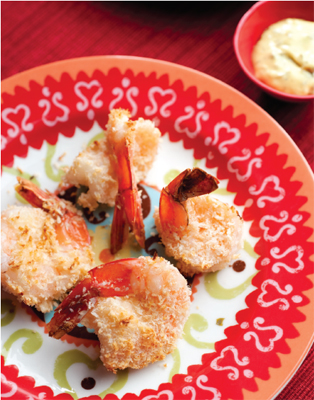
Breaded Not Fried Panko-Crusted Shrimp
Panko crumbs are the best way to get beautifully crisp shrimp in this delightful dish. Mustard and dill add a Nordic touch, while a hint of heat ties these flavors up in a beautiful bundle.
SERVES 4
Calories per serving: 289
2 tablespoons mayonnaise
2 tablespoons creamy dill mustard
2 tablespoons capers, drained and chopped
2 egg whites
½ teaspoon salt
2 cups Panko crumbs
1/4 teaspoon cayenne pepper
1 pound jumbo shrimp, peeled, deveined, and butterflied
1. STIR together mayonnaise, mustard, and capers in a small bowl for dipping sauce; set aside.
2. PREHEAT oven to 475 degrees. Whisk egg whites with 1/4 teaspoon salt in a shallow dish until frothy. Toss together crumbs, cayenne, and remaining 1/4 teaspoon salt in a shallow dish. Dip each shrimp in egg whites, dredge in panko crumbs, and place on a rimmed baking sheet. Bake until shrimp cooks through and crumbs are golden, about 12 minutes.
3. SERVE hot with the dipping sauce.
Tips
Sautéed Spinach with Grilled Turkey Sausage and Red Pepper and Rosemary Corn Bread
Lemon juice and lemon zest really bring out the fresh flavors in this easy sauté. Serve it with this simple yet satisfying red pepper and rosemary corn bread and feed your soul.
SERVES 4
Calories per serving, sausage and spinach sauté: 272
Calories per serving, red pepper and rosemary corn bread: 168
For the sausage and spinach sauté:
1 tablespoon olive oil
1 pound lean turkey sausage, about 1 package sliced into 1-inch rounds
2 cloves garlic, minced
3 10-ounce packages organic baby spinach
1 lemon
1/4 cup chicken broth, low sodium
1 teaspoon salt
1/4 teaspoon pepper
For the red pepper and rosemary corn bread:
1 whole red pepper
½ cup self-rising flour (or see substitute box)
1 cup fine polenta (cornmeal)
½ teaspoon baking soda
1/4 teaspoon salt
1 ½ teaspoons dry or fresh rosemary leaves, chopped very fine
1/4 cup of pitted black olives (optional)
2 medium free-range eggs
1 cup buttermilk
1 tablespoon honey
Self-rising flour substitute: Substitute 1 cup all-purpose flour, 1 ½ teaspoons baking powder and ½ teaspoon salt for each cup of self-rising flour
1. PREHEAT the oven to 350 degrees for the red pepper and rosemary corn bread.
2. TO MAKE THE SAUSAGE AND SPINACH: Heat a Dutch oven over medium heat; add the oil and sauté the sliced sausage and garlic. Zest the lemon and set aside. Juice the lemon and set aside. Add spinach, lemon juice and zest, and chicken stock, cover and cook until spinach is cooked down, about 5 minutes. Halfway through cooking toss spinach mixture with tongs. Season with salt and pepper.
3. TO MAKE THE RED PEPPER AND ROSEMARY CORN BREAD: Heat the loaf pan in the oven while the oven is warming up and you are preparing the recipe.
4. PUT the red pepper (halved and middle removed) onto a baking sheet. Place under a hot grill, skin side up, for 10 minutes until the skin is blistered and blackened.
5. REMOVE the red pepper from the oven and immediately place it into a small plastic bag and steam for a further 5 minutes. Carefully peel the skin from the red pepper. Slice thinly.
6. COMBINE the self-rising flour, cornmeal, baking soda, salt, and rosemary in a large mixing bowl. Set aside.
7. IN ANOTHER SMALLER BOWL, whisk the eggs, buttermilk, and honey with a fork until well combined. Add the red peppers. Mix into the dry ingredients, trying to avoid breaking up the peppers as much as possible. If you decide to add the pitted olives to the corn bread, now’s the time. Just dice them up and add with the dry ingredients.
8. TAKE the hot pan out of the oven and brush over a little olive oil. Sprinkle with a little cornmeal all over and add in the bread mixture. This will prevent the bread from sticking to the base and sides.
9. BAKE in the middle of the oven at 350 degrees for 35 to 45 minutes or until a skewer inserted into the bread comes out clean.
Tips
Skinny Down-Home Chicken Pot Pie
Premade phyllo dough makes the scary part of assembling pot pie a breeze, and leaves you plenty of time to get the chicken and veggies just the way you like them for this quintessential hearty comfort food.
SERVES 6
Calories per serving: 372
3 tablespoons olive oil
1/4 cup all-purpose flour
1 small onion, diced (about 1.5 ounces)
2 garlic cloves, minced
1 leek, chopped (about 1 ounce)
1 large carrot, chopped (about 1 ounce)
1 celery stalk (about 1 ounce)
2 red potatoes, skin on, diced (about 6 ounces)
2 turnips, peeled and diced (about 4 ounces)
2 boneless, skinless chicken breasts, cut into small cubes
2 boneless, skinless chicken thighs, cut into small cubes
1 bay leaf
2 sprigs of fresh thyme
1 tablespoon salt
1 teaspoon freshly ground pepper
2 ½ cups chicken stock
6 sheets of phyllo dough
1 tablespoon olive oil, for brushing
1 9-by-9-inch cake pan
1. PREHEAT the oven to 350 degrees. Thaw 6 sheets of phyllo dough overnight in the refrigerator or one hour before using. Bring the chicken stock to a simmer and keep warm.
2. IN A 6-QUART POT, add the olive oil and flour and cook until lightly golden, about 3 minutes. Add the onion, garlic, leek, carrot, celery, red potato, and turnips and stir with a wooden spoon, making sure the bottom does not get too dry. Add the chicken, bay leaf, and sprigs of thyme and continue stirring for about 3 minutes, so that everything is coated with the flour mixture.
3. ADD the warm chicken stock, stir and scrape the bottom of the pot to get all the color into the mixture and keep it from scorching. Bring to a boil then lower to a simmer. Let the mixture simmer, covered, for another 5 to 7 minutes until it becomes thick and the chicken is opaque. Remove from heat and reserve.
4. MEANWHILE, take 6 sheets of phyllo dough and, with a knife, cut out a square slightly larger than the rim of the 9-by-9-inch cake pan and brush with some olive oil. Set aside.
5. REMOVE the bay leaf and thyme sprigs from the chicken mixture and transfer the chicken to the cake pan. Top with the phyllo dough and press it down firmly with your hands. Place the pie on a baking sheet and bake in the oven at 350 degrees for 30 minutes, turning the tray around halfway through the cooking time. Remove from the oven, let cool for 10 minutes, cut into six portions and serve.
This boldly flavored Italian sauce is so simple to make and it’ll dress up salmon, steak, or in this case, grilled, butterflied chicken breasts. The juicy, herbaceous salsa verde leaves you with a beautiful plate, bursting with exciting and dynamic flavors.
SERVES 4
Calories per serving: 370
For the Chicken:
2 tablespoons extra virgin olive oil
1 lemon, washed and quartered
3 cloves garlic, peeled and smashed
1 teaspoon salt
1/4 teaspoon freshly ground pepper
3 branches fresh rosemary, or
1 teaspoon dried 4 boneless, skinless chicken breasts, butterflied
For the side of tomatoes:
1 tablespoon olive oil
1 garlic clove, whole
1 pint cherry tomatoes
Splash of balsamic vinegar
For the Salsa Verde:
1 cup flat leaf parsley, chopped
1 cup mint leaves, chopped
2 cups basil, chopped
1/3 cup extra-virgin olive oil
3 garlic cloves, finely chopped
3 tablespoons capers, rinsed and chopped
4 anchovy fillets, bones removed, soaked and chopped
1 tablespoon Dijon mustard
1 tablespoon red wine vinegar
1/8 teaspoon freshly ground pepper, or more to taste
Coarse sea salt, to taste
1. TO MARINATE THE CHICKEN: In a large plastic sealable bag, squeeze the juice from the lemon and add the lemon. Add all the remaining ingredients, seal carefully, and massage the marinade into the chicken. Refrigerate for 30 minutes, or even overnight.
2. TO MAKE THE SALSA VERDE: Mix all ingredients in a small bowl. Set aside until serving. Refrigerate if made earlier in the day and remove an hour or so before serving.
3. TO COOK THE CHICKEN: Lightly spray a stovetop cast iron griddle with oil and heat over medium high heat until smoking.
4. REMOVE the chicken from the marinade and pat off excess marinade. Place the chicken on the griddle and cook about 2 to 3 minutes per side. Turn the chicken and cook 2 more minutes, until cooked through.
5. TO MAKE THE TOMATOES: Heat the oil in a small sauté pan over medium high heat. Add the garlic and tomatoes and splash of balsamic vinegar and sauté for 2-3 minutes, until the tomatoes are warmed through. Crush lightly with a wooden spoon and serve.
6. PLACE the chicken on a platter and top with the salsa verde with the tomatoes on the side.
Tips
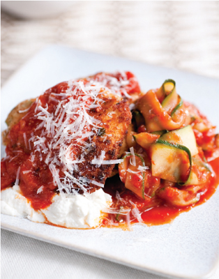
Cheezy Chicken Parmesan with Zucchini “Pasta”
Zucchini sliced paper-thin stands in for pappardelle pasta and low-fat ricotta brings the creamy feel of a high-fat pasta dish. Wheat breadcrumbs and a quick dip in light oil give a delectable crunch to the chicken cutlets.
SERVES 4
Calories per serving: 350
For the tomato sauce and zucchini pappardelle:
2 tablespoons olive oil, divided
1/4 red onion, coarsely chopped
3 cloves garlic, sliced thin
Salt
1 (28-ounce) can peeled plum tomatoes, preferably San Marzano, in juice, mashed
1 sprig fresh basil
Pepper
1/4 cup fresh parsley leaves, chopped
4 zucchini (about 1 ½ pounds), trimmed at both ends
For the chicken:
1/4 cup freshly grated Parmesan cheese, plus 2 tablespoons extra, for serving
1/4 cup dried whole wheat or white breadcrumbs
1 large egg white, lightly beaten with a fork
1 pound boneless, skinless chicken breasts, split in half to make 6 to 8 large, thin cutlets
Pepper
4 teaspoons olive oil, plus 2 teaspoons extra for serving
1/4 cup part-skim ricotta cheese
1. FOR THE SAUCE, heat 1 tablespoon of the oil in a large skillet over medium-low heat. Add the onion, garlic, and ½ teaspoon salt. Cook, stirring, 1 minute. Cover, reduce heat to very low and cook until vegetables are softened, about 5 minutes. (Check a few times during cooking; if vegetables begin to brown, add 2 teaspoons water and stir.) Add the tomatoes with juice, basil, and another ½ teaspoon salt. Bring to a simmer, cover and simmer gently 5 minutes. Then simmer very gently, partially covered, until thickened, about 20 minutes. Season with 1/8 teaspoon pepper.
2. MEANWHILE, using a mandolin or vegetable peeler, slice the zucchini lengthwise into 1/8-inch-thick long pappardelle-like strips, turning the zucchini and slicing on 4 sides only until you see the center seeds. Discard the centers.
3. REMOVE the tomato sauce to a bowl with a rubber spatula; no need to clean the skillet. Heat the remaining 1 tablespoon of oil in the skillet over medium heat. Add the zucchini and 1/4 teaspoon salt. Cover and cook until wilted, tossing often with tongs for even cooking, 8 to 10 minutes. Return the tomato sauce to the pan, add 1 tablespoon of the parsley, and season with 1/8 teaspoon pepper; cover and set aside.
4. ON A PLATE, combine the breadcrumbs, 1/4 cup grated Parmesan, and the remaining chopped parsley. Place the egg white on a second plate. Sprinkle chicken on both sides with salt and pepper. Dip the chicken into the egg whites, and then into the breadcrumb mixture to coat completely; set aside on a large plate or platter.
5. HEAT 2 teaspoons oil in each of two nonstick 10-inch skillets over medium-high heat. Add half of the chicken to each skillet and cook until lightly browned on one side, 2 to 3 minutes. Flip, and cook until chicken is firm, and lightly browned on the other side, 1 to 3 more minutes.
6. TO SERVE, rewarm the zucchini in the tomato sauce over medium heat. Use tongs to make a “twist” of zucchini pappardelle on each of 4 plates. Lean chicken cutlets against the side of zucchini. Scoop 1 tablespoon ricotta onto each plate, and spoon remaining tomato sauce on top of the chicken. To garnish each plate, drizzle chicken with ½ teaspoon olive oil, and sprinkle with 1 teaspoon Parmesan.
Tips
Simple, classic, and oh-so Italian, carbonara is what spaghetti was born to become. Al dente pasta paired with salty smoky bacon, peas, and Parmesan is a culinary revelation—perfect and easy. Too bad life can’t be like this more often.
SERVES 4
Calories per serving: 412
For the spaghetti:
3 slices bacon
1 teaspoon olive oil
1 small onion, diced
1/3 cup low-fat (1%) milk
1 large egg
8 ounces spaghetti
1 cup frozen peas
1 ½ ounces Parmesan cheese, finely grated (6 tablespoons)
1/4 cup sliced fresh flat-leaf parsley
Salt, to taste
Pepper, to taste
1. COOK the bacon in a large skillet over medium heat, turning occasionally until browned and crisp, about 6 minutes. Drain pan and dry bacon on paper towels; keep the skillet on the heat. Add the oil and onion and cook, stirring occasionally, until softened and translucent, about 3 minutes. Remove from the heat. Whisk together the milk and egg in a large serving bowl until well-combined. Stir in the onion.
2. BRING a large saucepan of salted water to a boil. Add spaghetti, and cook according to the directions on the package. Two minutes before the spaghetti is done, stir in the peas. Drain and immediately transfer to the milk mixture. Toss until the pasta is well-coated. Add the cheese, parsley, ½ teaspoon salt, and 1/4 teaspoon pepper and toss well. Crumble the bacon into small pieces over the spaghetti, and toss. Serve immediately.
Tip
This is best with regular pasta; whole wheat, or whole grain pasta competes with the taste of the sauce.
Supreme Quesadilla with Poblano Peppers
Mexicans have known that freshness and a little spice go a long way toward eating healthy, as proved by this earthy roasted pepper quesadilla. Lime and onion give the guacamole depth without compromise. Corn tortillas are naturally lower in fat and calories than bread but every bit as satisfying.
SERVES 4
Calories per serving: 272
For the quesadillas:
1 poblano chile
1 teaspoon vegetable oil
1 large white onion
1/4 teaspoon salt
Freshly ground black pepper, to taste
8 corn tortillas
4 ounces shredded low-fat cheddar cheese
For the guacamole:
1 Hass avocado
½ large tomato, cored and diced
½ tablespoon fresh lime juice
1/4 teaspoon salt
To serve:
1/4 cup reduced-fat sour cream
1. ROAST the poblano chile over an open flame with a burner on using a pair of tongs to hold over the fire. Turn the chile occasionally and roast until completely blackened. Alternatively, broil on a baking sheet, turning, until blackened. Transfer to a bowl and cover with plastic wrap and let stand for 10 to 15 minutes.
2. WHILE THE CHILE COOLS, make the guacamole. Seed, peel, and dice the avocado and transfer to a bowl along with the diced tomato, lime juice, and salt. Stir and mash with a fork or spoon until well combined and set aside.
3. PEEL, stem and seed the cooled poblano chile and cut it crosswise into thin strips. Heat the oil in a large skillet over medium heat. Add the onion and poblano chile strips and season with 1/4 teaspoon of salt and freshly ground pepper, stirring occasionally. Add about 2 tablespoons of water if the mixture becomes too dry. Cover with a lid and cook until the onions are softened and translucent, about 9 minutes. Remove from heat and reserve warm.
4. HEAT a separate skillet over low to medium heat. Place 2 tortillas and warm them, turning occasionally, until pliable, about 2-3 minutes. Remove one tortilla and reserve. Sprinkle a thin, even layer of cheese on a tortilla in the skillet. Top with an even layer of the warm chile and onion mixture, then another thin layer of cheese. Center the reserved warm tortilla over the cheese and heat until the bottom tortilla is browned in spots, about 1 minute. Carefully flip quesadilla and cook until the other side is brown and the cheese is completely melted, about 2 minutes. Place on a baking sheet and keep warm in the oven. Repeat with the remaining tortillas and filling.
5. CUT each quesadilla in quarters and serve with the guacamole and sour cream.
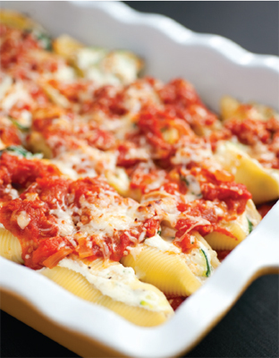
It’s important to remember that zucchini is your friend. It’s a real chameleon in the kitchen, taking the place of noodles or in this case cheese, adding weight to the dish, not to you.
SERVES 10
Calories per serving: 331
12 ounces (1 box) jumbo pasta shells (approximately 40 shells)
For the tomato sauce:
1 (28-ounce) can peeled plum tomatoes in juice
1 (14-ounce) can peeled plum tomatoes in juice
2 teaspoons olive oil
3/4 cup roughly chopped red onion
4 cloves garlic, sliced thin
Salt
2 sprigs fresh basil
Pepper
For the stuffing:
1-pound bag baby spinach
Salt and pepper
2 teaspoons olive oil, plus extra for serving
2 medium zucchini, halved lengthwise, and sliced thin
2 scallions, chopped
2 cups (16 ounces) part-skim ricotta cheese
1 ½ cups shredded reduced-fat, part-skim mozzarella cheese
1 thin slice ham, chopped
2 tablespoons chopped parsley
½ cup grated Parmesan cheese
Pinch grated nutmeg
1. SPRAY a baking sheet lightly with cooking spray. Bring a large pot of salted water to a boil. Add the shells, and partially cook—they should have started to become tender but will still be firm to the bite, 6 to 7 minutes. Drain in a colander, and immediately transfer to the oiled baking sheet, spreading them out in a single layer so that they don’t stick together. Let cool.
2. FOR THE SAUCE, pour the tomatoes into a bowl and mash with your hands, or pulse in food processor to chop. Heat the oil in a large saucepan over medium-low heat. Add the onion and garlic. Cook, stirring, for 1 minute. Cover, reduce heat to very low and cook until vegetables are softened, about 5 minutes. (Check a few times during cooking; if vegetables begin to brown, add 2 teaspoons water and stir.) Add the tomatoes with juice, basil, and ½ teaspoon salt. Bring to a simmer, cover, and simmer gently 5 minutes. Then simmer very gently, partially covered, until thickened, about 20 minutes. Season with 1/8 teaspoon pepper. Scrape into another container with a rubber spatula; set aside.
3. ADD the spinach and ½ teaspoon salt to the skillet. Place over medium heat, cover and cook, tossing every now and then with tongs for even cooking, until wilted, 5 to 6 minutes. Drain, and let cool, then squeeze out as much liquid as you can, and chop. Transfer to a bowl; set aside.
4. IN THE SAME SKILLET, heat the oil over medium heat. Add the zucchini and 1/4 teaspoon salt and cook, stirring every now and then, until tender and lightly browned, 5 to 7 minutes. Add scallions during the final 1 minute. Add to the bowl with the spinach. Add the ricotta, the ham, ½ cup of the mozzarella, the parsley, 1/8 teaspoon pepper, and the nutmeg, and stir to combine.
5. PREHEAT the oven to 350 degrees.
6. SPOON a thin layer of sauce over the bottom of two 9-by-13-inch baking dishes. Fill the cooked shells with the cheese mixture, about 1 tablespoon per shell, and arrange the shells side by side in a single layer in the prepared dishes. Spoon the remaining sauce over the shells, then sprinkle each with ½ cup of the mozzarella, and 1/4 cup of the Parmesan.
7. COVER with aluminum foil and bake until the filling is heated through and the cheese is melted, 25 to 30 minutes.
Tip
Cooked zucchini stands in for some of the cheese in the traditional ricotta filling, adding bulk and moisture. Other vegetables can be substituted, including sautéed mushrooms, or baked butternut squash.
Let smoky grilled eggplant stamp your tastebuds’ passport for a flavor trip to the Greek Isles. Feta, tomatoes, and pesto join eggplant in this delicious layered construction that stacks up favorably against fattier moussaka or lasagna.
SERVES 4
Calories per serving, 2 stacks per person: 596
4 eggplants, thinly sliced rounds, about 2 pounds
4 tablespoons extra-virgin olive oil
4 tablespoons balsamic vinegar
1 lemon, juiced
1 1/4 cups store-bought pesto
4 to 5 tomatoes, thinly sliced
1 1/4 cups feta, crumbled
½ cup basil
Salt and pepper
1. LAY the eggplant slices on a sheet pan, lightly sprinkle with salt and pepper.
2. MIX together the olive oil, balsamic vinegar, and lemon juice, and lightly brush the eggplant slices.
3. HEAT the broiler or grill pan, or low gas grill. Grill or broil the eggplant, turning over occasionally, until eggplant is very tender, 6 to 10 minutes, do not let them burn. Cook low and slow for sweetness. Remove and reserve.
4. PREHEAT oven to 350 degrees.
5. ON BAKING PAN, arrange 4 of the largest eggplant rounds side by side and spread each with thin layer of pesto, then top each with largest tomato rounds. Season tomatoes with salt and pepper and top each with about 1 tablespoon feta and a pinch of chopped basil. Continue to layer, ending with cheese.
6. BAKE in the oven (or on the grill) until cheese begins to melt, about 3-4 minutes. Garnish with fresh lemons.
Tip
If your kids don’t like pesto or feta, you can change it up with tomato sauce and mozzarella.
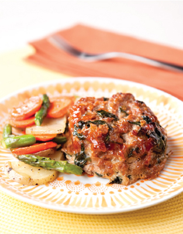
Turkey Mini-Meatloaves with Roasted Root Veggies
Ground turkey is one of those things we really can’t live without. It’s as versatile as ground beef with so much less of everything bad. Baking the meatloaves in individual portions helps maintain portion control.
SERVES 4
Calories per serving, meatloaves: 227
Calories per serving, roasted root veggies: 121
For the meatloaf:
1 slice whole wheat bread
½ cup skim milk
1 tablespoon plus
1 teaspoon olive oil
1 onion, diced
5-ounce bag baby spinach leaves
1 1/4 pounds ground turkey
2 tablespoons finely grated Parmesan
1 large egg
½ teaspoon salt
1/4 teaspoon freshly ground black pepper
1/8 teaspoon freshly grated nutmeg
For the glaze:
3 tablespoons ketchup
2 teaspoons Worcestershire sauce
1 teaspoon hot sauce
For the roasted root veggies:
3 large carrots, cut on the bias
2 Yukon Gold potatoes, cut on the bias
1/4 cup asparagus (about 4 stalks)
1 teaspoon chopped parsley
1 teaspoon chopped chives
1 ½ tablespoons olive oil
1 teaspoon salt
1/4 teaspoon pepper
1. PREHEAT oven to 375 degrees. Arrange oven racks to accommodate two dishes being cooked simultaneously.
2. GRIND the bread in a food processor until fine crumbs form. Transfer to a large bowl, and pour milk over crumbs.
3. HEAT 1 teaspoon oil in a large skillet, preferably nonstick, over medium heat. Add onion and cook, stirring occasionally, until softened and golden, about 5 minutes. Add spinach, and stir until just wilted, about 30 seconds. Transfer to bowl with soaked crumbs. Add the turkey, cheese, egg, salt, pepper, and nutmeg. Combine the mixture with your hands until well mixed; it will be quite wet.
4. PACK 1 cup of the mixture into a 1-cup dry measuring cup. Invert the cup onto a rimmed baking sheet, gently shaking the cup to release the mixture. Gently pat the mound to smooth its shape. Repeat with remaining mixture. Bake mini meatloaves until cooked through and golden, about 40 minutes.
5. WHILE THE MEATLOAVES ARE COOKING, make the glaze: In a small bowl combine the ketchup, Worcestershire sauce, and hot sauce. Brush over meatloaves.
6. TO MAKE THE ROASTED ROOT VEGETABLES: On a baking sheet, toss all the vegetables in the olive oil, season with salt and pepper. Add to the oven along with the meatloaf and roast for 30–35 minutes, stirring midway through baking. Remove from the oven and sprinkle with fresh herbs.
Tip
Ground turkey stands in for ground beef; spinach keeps the mixture moist, without adding fat.
Comfort food that doesn’t require sweatpants. Everyone’s favorite mac and cheese keeps us in form-flattering jeans thanks to multi-grain pasta and smarter cheese choices. So easy to make too.
SERVES 4
Calories per serving: 517
2 cups multi-grain elbow macaroni
1 ½ tablespoons unsalted butter
2 tablespoons all-purpose flour
1 ½ cups skim milk, warmed for 1 minute in the microwave, or heated on stove
8 ounces low-fat sharp cheddar cheese, shredded (about 2 1/4 cups)
2 teaspoons Worcestershire sauce
Pinch of pepper
Pinch of freshly grated nutmeg
1/4 cup Panko crumbs or whole wheat breadcrumbs
1. PREHEAT the broiler.
2. BRING a large saucepan of salted water to a boil and cook pasta according to package directions.
3. WHILE THE PASTA IS COOKING, melt the butter in a large saucepan over medium heat. Add the flour and cook, whisking constantly until golden, about 2 minutes. Continue whisking and add the milk in a slow, steady stream. Bring the mixture to a steady simmer, whisking constantly, and whisk until thickened, about 2 minutes.
4. DRAIN the pasta in a colander. Remove the sauce from the heat, add the cheese, and stir until the cheese melts. Immediately add the hot, drained pasta and stir until well-coated. Stir in Worcestershire sauce, 1/4 teaspoon salt, a pinch of pepper, and the nutmeg.
5. DIVIDE the mac and cheese among four 6-ounce ovenproof ramekins and sprinkle 1 tablespoon breadcrumbs over each. Broil until crumbs are golden and crisp, 1 to 2 minutes, taking care not to let the top burn. Serve immediately.
Tips
Today’s pork is lean, delicious, and a joy to cook with—especially when it ends up in this tangy, fruity Asian-inspired sauce. We love to serve it on nutty brown rice to really bring out the complex flavors.
SERVES 4
Calories per serving, pork chops: 290
Calories per serving, brown rice: 175
For the pork chops:
1 tablespoon dry sherry
1/4 teaspoon pepper
2 tablespoons low-sodium soy sauce
1 ½ teaspoons sugar
1 pound (1-inch-thick) boneless pork loin chops, trimmed of any fat, and cut into 1-inch cubes
2 tablespoons pineapple juice
1 tablespoon ketchup
½ teaspoon white vinegar
3 tablespoons canola oil
1 red onion, peeled, trimmed, and cut into 1-inch cubes
2 red (or 1 red and 1 green) bell peppers, stemmed, seeded, and cut into 1-inch cubes
For the brown rice:
1 ½ cups brown rice
3 cups chicken stock
1. TO MAKE THE PORK CHOPS: Combine sherry, pepper, 1 tablespoon of the soy sauce, and ½ teaspoon of the sugar in a medium bowl. Add pork and gently toss until well-coated. Let marinate in the refrigerator.
2. STIR together pineapple juice, ketchup, vinegar, the remaining tablespoon of soy sauce, and remaining teaspoon of sugar in a small bowl until well-combined.
3. HEAT 1 tablespoon of the oil in a large, nonstick skillet over medium-high heat until hot but not smoking. Add onion and cook, stirring occasionally, until browned but still a little crisp, about 2 minutes. Transfer to a large dish. Heat another tablespoon oil in the same skillet over medium-high heat until hot but not smoking. Add peppers and cook, stirring occasionally, until browned but still a little crisp, about 3 minutes. Transfer to the same dish.
4. HEAT remaining tablespoon oil in the same skillet over medium-high heat until hot but not smoking. Add the pork cubes, arranging in a single layer. Cook, undisturbed, until a golden-brown crust forms on the bottom, about 1 ½ minutes. Turn the cubes over and cook until a golden-brown crust forms on the other side, about 1 ½ minutes. Return onion and peppers to the pan and toss to combine. Add pineapple juice mixture and cook, stirring, until sauce evenly coats everything and thickens slightly, about 2 minutes. Serve immediately.
5. TO MAKE THE BROWN RICE: In a saucepan, bring the stock to a boil and add the rice. Cover with a lid and let simmer for 20 to 30 minutes. Using a fork, fluff the grains and serve.
Tip
This serves 4 as a one-dish meal with steamed brown or white rice, or eight as one of many dishes in a larger meal.
Green Chile Chicken Enchiladas
Most of what you need to whip up a tray of these tasty enchiladas you probably already have in your fridge or pantry. Just oven-roast a pair of piquant peppers and the rest practically takes care of itself. And as is the case with most real Mexican, fat isn’t really an issue.
SERVES 4
Calories per serving: 456
For the Enchiladas:
2 roasted poblano peppers, peeled
1 bunch of cilantro leaves, washed, stems discarded
1 lime, zested and juiced
2 cloves garlic
3/4 cup chicken broth
1 teaspoon salt
1/4 teaspoon freshly ground black pepper
12 corn tortillas
1 cup canned nonfat refried beans
3 cups of leftover roast chicken, shredded
3/4 cup reduced-fat shredded cheese, such as Mexican-style, Monterey Jack, or cheddar
2 scallions, thinly sliced
For the garnish:
chopped fresh cilantro, 1 lime, cut into wedges
1. PREHEAT oven to 425 degrees.
2. LIGHTLY OIL a 9-by-13-inch baking dish with cooking spray or one teaspoon olive oil. In a food processor or a blender, puree the roasted and peeled peppers, cilantro, garlic, lime zest and juice, chicken stock, salt, and pepper until smooth.
3. SPREAD 1/3 cup of the sauce in the prepared baking dish. Top with an overlapping layer of 6 tortillas. Spread refried beans evenly over the tortillas. Top the beans with the shredded chicken mixture, and add 1/3 of the sauce, followed by the remaining 6 tortillas. Pour the remaining sauce over the tortillas. Cover with foil.
4. BAKE the enchiladas until they begin to bubble on the sides, about 20 minutes. Remove the foil; sprinkle cheese and scallions on top. Continue baking until heated through and the cheese is melted, about 5 minutes more. Top with cilantro and serve with lime wedges.
Tip
Can’t find poblanos? Swap 2 green or red roasted peppers. Like it spicier? Toss a jalapeño in the blender.
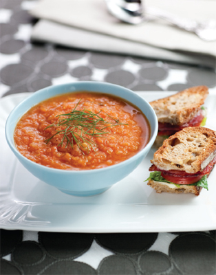
Tomato Fennel Soup and Turkey BLT
Turkey bacon is so tasty in this reworked classic soup and sandwich combo. We like the way a splash of white wine really brightens our tomato soup, and sweet-savory spicing sets these BLTs apart from the ho-hum.
SERVES 4
Calories per serving: 508
For the tomato fennel soup:
2 medium fennel bulbs
2 tablespoons vegetable oil
½ teaspoon salt
1/4 teaspoon pepper
4 medium tomatoes, cored and quartered
4 sprigs fresh thyme
½ cup dry white wine
2 teaspoons tomato paste
1 cup low-sodium chicken broth
2 (1-inch-thick) slices whole wheat baguette, toasted
2 teaspoons sugar, if needed
For the sandwiches:
4 slices turkey bacon
1 tablespoon maple syrup
½ teaspoon coarsely ground black pepper
1/4 teaspoon cayenne pepper
3 tablespoons mayonnaise
8 (½-inch-thick) slices whole wheat baguette, lightly toasted
8 leaves iceberg lettuce
1 small tomato, sliced
1. TO MAKE THE SOUP, trim the tops and fronds from the fennel, reserving 8 fronds for garnish. Halve the fennel lengthwise, and remove the cores. Cut the fennel crosswise into ½-inch-thick slices.
2. HEAT the oil in a large saucepan over medium heat. Add the fennel, season with 1/4 teaspoon salt and 1/8 teaspoon pepper, and cook, stirring occasionally, until softened and caramelized, about 25 minutes. Add the tomatoes, thyme, and remaining 1/4 teaspoon salt and 1/8 teaspoon pepper. Cook, stirring occasionally until the tomatoes break down completely, about 15 minutes. Add the wine, tomato paste, and broth, and simmer 20 minutes. Add the bread and soak it in the soup until completely softened, about 5 minutes.
3. REMOVE the thyme sprigs, transfer soup to a blender or food processor, and blend until completely smooth. Return to the saucepan. (If you prefer a thinner, smoother soup, strain through a fine-mesh sieve.) Heat over medium-low heat until heated through, about 1 minute. If the tomatoes were not ripe summer fruit, taste and add sugar if needed.
4. WHILE THE SOUP SIMMERS, make the sandwiches: Preheat the oven to 400 degrees. Place the bacon on a baking sheet lined with parchment paper, a nonstick baking mat, or lightly greased foil. Bake until golden, turning once, about 10 minutes. Brush bacon with syrup and sprinkle with both peppers. Bake until golden brown and crisp, about 10 minutes. Break each piece into thirds.
5. SPREAD the mayonnaise on one side of each of the baguette slices. Divide the bacon, lettuce, and tomato among 4 slices of bread. Sandwich with the remaining slices of bread. Serve soup and sandwiches together.
Tips
Tuna melt loses the carbs and gets sophisticated yet simple when portobellos are swapped for the usual toast.
SERVES 2
Calories per serving: 539
4 portobello mushrooms, stemmed, gills removed
2 tablespoons olive oil
1 (5-ounce) can albacore tuna packed in water, drained
1 celery stalk, finely chopped
½ cup finely chopped fresh flat-leaf parsley
2 tablespoons fresh lemon juice
Salt and pepper
4 deli-thin slices Swiss cheese
4 slices tomatoes
½ cup mixed baby greens
1. PREHEAT the broiler. Brush the mushrooms with 1 tablespoon oil. Transfer to a rimmed baking sheet and broil, turning once until softened and cooked through, about 10 minutes.
2. WHILE THE MUSHROOMS ARE COOKING, in a bowl, combine tuna, celery, parsley, lemon juice, ½ teaspoon salt, 1/4 teaspoon pepper, and remaining tablespoon oil.
3. REMOVE the mushrooms from the oven. Divide tuna mixture among mushrooms, and spread evenly in caps. Top each with a slice of cheese, and broil until cheese melts, about 2 minutes. Top each mushroom with a tomato slice and 2 tablespoons greens, and serve immediately.
Tip
Try low-fat Swiss instead of regular as a calorie saver. To change up the flavor, try Havarti or cheddar.
Eat creamy chicken tetrazzini without guilt thanks to a little skim milk and whole grain noodles. Roast seasoned white meat chicken for minimum fat and maximum flavor with an unequaled air of indulgence.
SERVES 4
Calories per serving: 450
3 ½ tablespoons olive oil
1 pound split, bone-in chicken breasts
1 tablespoon fresh thyme leaves
½ teaspoon salt
1/4 teaspoon pepper
1 pound mushrooms, trimmed and quartered
2 cloves garlic, finely chopped
1 ½ tablespoons unsalted butter
1 tablespoon all-purpose flour
3/4 cup skim milk, warmed
3/4 cup low-sodium chicken stock, warmed
1/4 pound whole grain spaghetti
1 cup frozen peas, thawed
2 tablespoons finely grated Parmesan (1/4 ounce)
1. PREHEAT oven to 400 degrees. Lightly grease a shallow 1 ½-quart glass or ceramic baking dish with ½ tablespoon of the oil. Place chicken in the prepared baking dish. Rub with 1 tablespoon oil, sprinkle with thyme leaves, and 1/8 teaspoon each salt and pepper. Roast until chicken is golden brown, and cooked through, about 25 minutes.
2. MEANWHILE, arrange the mushrooms in a single layer in a 2-quart glass or ceramic baking dish. Add the garlic, 1/4 teaspoon salt, and the remaining 2 tablespoons oil, and toss to coat. Roast alongside chicken until mushrooms are browned, about 15 minutes.
3. LOWER oven heat to 350 degrees. Set mushrooms aside. When chicken is cool enough to handle, remove skin and bones, and cut meat into ½-inch cubes. Reserve the baking dish.
4. BRING a large saucepan of water to a boil and cook spaghetti according to package directions. Drain in a colander.
5. WHILE THE SPAGHETTI IS COOKING, melt the butter in a large saucepan over medium heat. Add the flour and cook, whisking constantly, until golden, about 2 minutes. Whisking constantly, add the milk, and then the broth in a slow, steady stream. Bring the sauce to a steady simmer, whisking constantly until thickened, about 2 minutes. Season with remaining 1/8 teaspoon each salt and pepper.
6. IN A LARGE BOWL, toss together the spaghetti, peas, mushrooms, and half of the sauce. Transfer to reserved baking dish, making a well in the center. Stir together chicken meat and remaining sauce, and spoon into the well. Sprinkle all over with cheese.
7. BAKE until sauce is bubbling and top is lightly browned, about 15 minutes. Serve immediately.
Tips
You don’t have to give up your fried faves in order to lose weight—you just have to make the recipes work for you. Our roasted-not-fried buffalo chicken wings still have all the spicy, saucy goodness of regular wings, but with fewer calories. Served with our homemade blue cheese dressing, this is your favorite bar food—only better!
SERVES 4 (FOR APPETIZERS)
Calories per serving, wings: 263
Calories per serving, blue cheese dressing: 226
For the wings:
1 1/4 pounds chicken wings, wing tips discarded, wings separated between first and second joints
½ cup low-sodium, low-fat chicken stock
2 tablespoons hot sauce (preferably Frank’s), or more to taste
1 clove garlic, minced Pinch salt
1 tablespoon cornstarch
For the blue-cheese dressing:
1/3 cup nonfat buttermilk
1/3 cup reduced-fat mayonnaise
½ cup crumbled blue cheese
2 teaspoons lemon juice
Pinch each salt and pepper
1. FOR THE WINGS, preheat the oven to 425 degrees, and arrange a rack in the center of the oven.
2. BRING 1 inch of water to a simmer in a large pot. Place the wings in a steamer basket, set it on top of the simmering water, cover, and steam 10 minutes. Drain on paper towels.
3. LINE a baking sheet with parchment paper. Arrange the wings in a single layer on the lined baking sheet and roast 20 minutes. Turn and continue roasting until well browned, and crisp, 15 to 20 more minutes.
4. MEANWHILE, combine the stock, hot sauce, garlic, and salt in a small saucepan. In a small bowl, stir the cornstarch with 1 tablespoon of water. Bring the hot-sauce mixture to a simmer, and stir in enough of the cornstarch mixture to thicken the sauce to the consistency of heavy cream (you’ll use almost all of the cornstarch). Remove from the heat. Taste and add more hot sauce, if you like.
5. FOR THE DRESSING, combine all of the ingredients in a blender and blend until smooth.
6. WHEN THE WINGS ARE COOKED, transfer to a bowl. Return the hot-sauce mixture to a simmer, pour over the wings, and toss to coat. Serve with the dressing.
Tips
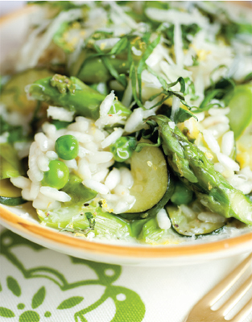
Risotto with Spring Vegetables
It takes a little stirring, but the effort pays off every time when you sit down to a plate of creamy rice and vegetables. The luxurious texture comes from the rice grains themselves with little added fat, and there’s plenty of room for as many veggies as you desire.
SERVES 4
Calories per serving: 489
1 tablespoon olive oil
1/4 cup chopped onion
1 clove garlic, chopped
2 medium (about 12 ounces) zucchini, trimmed, halved lengthwise, sliced 1/4-to 1/3-inch thick
4 ½ to 5 cups low-sodium chicken broth
1 pound medium asparagus, ends trimmed
½ cup frozen peas, thawed
1/4 cup grated Parmesan cheese
2 tablespoons thinly sliced basil
3/4 teaspoon salt
1 tablespoon unsalted butter
1 ½ cups short-grain rice (Arborio or Carnaroli)
½ cup dry white wine
1/4 teaspoon pepper
2 tablespoons chopped mint (optional), for garnish
1. COMBINE the oil and onion in a large saucepan over medium heat and cook, stirring occasionally, until the onion is translucent, 2 to 3 minutes. Add the garlic and cook 1 minute. Add the zucchini, turn the heat to medium-low, and cook until softened and lightly browned, 18 to 20 minutes.
2. MEANWHILE, bring the 5 cups stock to a simmer in a saucepan wide enough to hold the asparagus. Add the asparagus and simmer until barely tender, about 3 minutes. Remove with a slotted spoon or tongs. Cut off the tips in nice sized pieces (about 1 ½ inches), and cut the stalks into smaller, bite-sized pieces; transfer to a bowl. Add the peas, 1/4 cup of the cheese, and 1 tablespoon basil; set aside. Put a lid over the stock, and reduce the heat to very low so that the stock barely simmers.
3. WHEN THE ZUCCHINI IS COOKED, stir in ½ teaspoon salt, and the remaining 1 tablespoon of the basil. Add the butter and the rice, increase the heat to medium-high, and cook, stirring with a wooden spoon, until the rice is translucent, 1 to 2 minutes. Add the wine and cook, stirring, until most of the liquid has evaporated, about 1 minute. Add ½ cup simmering stock and cook, stirring frequently, until most of the liquid has been absorbed, about 2 minutes. Continue adding the broth, about ½ cup at a time, and cooking, stirring frequently, until the rice is just tender and the mixture is creamy and has the texture of loose porridge, 17 to 20 minutes. The rice mixture should bubble away at a good clip. (You may not use all of the stock.) Stir in the reserved contents of the bowl and season with the remaining 1/4 teaspoon salt, and the pepper.
Tips
The mouthfeel of steak without the fat, portobellos curb carnivorous meat cravings without compromising flavor. And stuffed with garlic, herbs, and a little fontina cheese, these caps will become a regular visitor to your cocktail hour or dinner table.
SERVES 4
Calories per serving: 329
4 portobello mushrooms, stems removed
3 garlic cloves, minced
1 tablespoon balsamic vinegar
2 tablespoons olive oil
1 cup fresh whole wheat breadcrumbs
1/4 cup finely chopped fresh flat-leaf parsley
1/4 cup finely chopped fresh basil
Salt and pepper
1/4 cup crumbled fontina cheese
1. PREHEAT the broiler. Using a spoon, scrape out the mushroom gills. Place mushrooms in a shallow dish. Whisk together garlic, vinegar, and 1 tablespoon oil, and pour over mushrooms, turning to coat. Transfer to a rimmed baking sheet and broil, turning once and brushing with remaining marinade occasionally, until softened and cooked through, about 10 minutes.
2. WHILE THE MUSHROOMS ARE COOKING, in a bowl, combine breadcrumbs, parsley, basil, remaining tablespoon oil, ½ teaspoon salt, and 1/4 teaspoon pepper.
3. REMOVE the mushrooms from the oven, sprinkle with 1/4 teaspoon salt and 1/4 teaspoon pepper. Sprinkle 1 tablespoon cheese into the cavity of each of the mushroom caps. Return to the broiler and broil until cheese melts, about 1 minute. Spread 1/4 cup breadcrumb mixture over the cheese in each of the mushroom caps, and broil until toasted and golden brown, about 2 minutes. Serve immediately.
Marinated Lamb Kebabs with Yogurt Sauce
Lamb gets the royal Mediterranean treatment in these juicy kebabs redolent with smoky spices and spiked with lemon, pine nuts, and dried apricot. Crunchy slaw and a garlicky yogurt sauce are the finishing touches to this riot of low-fat flavor.
SERVES 4
Calories per serving: 369
Calories per serving, pita: 85
For the lamb:
1 large garlic clove
1/4 teaspoon salt
1 teaspoon ground cumin
1 teaspoon ground coriander
1 teaspoon ground turmeric
½ teaspoon paprika
1/4 cup mixed pine nuts, pistachios and chopped dried apricots
2 teaspoons lemon juice
1 tablespoon olive oil
½ teaspoon honey
2 tablespoons tomato paste
3/4 pound one-inch cubed leg of lamb (trimmed of all visible fat)
For the salad:
1 cup iceberg lettuce, shredded
1 cup purple cabbage
4 tomatoes, sliced thinly
For the dressing:
4 heaping tablespoons low-fat
Greek yogurt
2 heaping tablespoons mayonnaise
1 clove garlic, minced
Optional:
2 whole wheat pitas, sliced in half
1. COMPLETELY COVER and soak eight bamboo skewers in cold water.
2. GRIND the garlic and salt in a food processor. Once the mixture has turned to paste, add the ground cumin, coriander, turmeric, paprika, pine nuts, pistachios, and dried apricots, and grind again to mix thoroughly.
3. ADD the mixture into a medium-sized bowl and combine with the lemon juice, olive oil, honey, and tomato paste.
4. ADD the cubed lamb to the paste and coat the meat completely. Cover with plastic wrap and marinate 20 minutes to two hours. While the meat is marinating, make the salad and the dressing.
5. FOR THE SALAD, toss together the shredded cabbage and lettuce.
6. FOR THE DRESSING, mix together the yogurt, mayonnaise, and minced garlic.
7. DR AIN the bamboo skewers and pat dry. Thread four pieces of lamb onto each bamboo stick.
8. HEAT grill pan so that it is hot, but not smoking. Cook the meat for 4 minutes on each of its 4 sides, turning them carefully. Once the meat is all cooked, remove and allow it to rest for 5 minutes under aluminum foil.
9. WHILE THE MEAT IS RESTING, place the pita bread in the toaster for a minute to puff the pita without toasting it. Once puffed up, cut along one side with a pair of scissors and open the hot pita pocket up. Repeat this step with the remaining pitas.
10. SPREAD a couple of tablespoons of the yogurt dressing into each of the pitas. Add the cooked meat from one or two skewers by easing it off the sticks with a fork. Add a handful of salad and a few tomato slices.
Tips
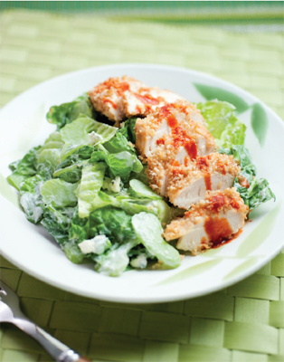
Chicken tenders baked in a crunchy crust peel away most of the fat and mess of actually deep frying buffalo wings. The super fattening melted butter sauce of the original is gone too, and we’ve swapped the full-fat dressing for low-or no-fat buttermilk and yogurt sprinkled with tasty blue cheese.
SERVES 4
Calories per serving: 480
2 tablespoons hot sauce (preferably Frank’s)
1 teaspoon apple cider vinegar
1 teaspoon dark brown sugar
1/4 teaspoon salt
1 pound chicken tenders
½ cup whole wheat breadcrumbs or Panko
1 teaspoon vegetable oil
1 ounce crumbled blue cheese (about 1/4 cup)
1/4 cup plain nonfat yogurt
2 tablespoons nonfat or low-fat buttermilk
1/4 teaspoon black pepper.
1 head romaine lettuce, chopped
6 celery stalks, thinly sliced
1. PREHEAT the oven to 400 degrees. Whisk together the hot sauce, vinegar, sugar, and salt in a shallow dish until well blended. Add the chicken and turn to coat. Marinate for 10 minutes at room temperature.
2. PUT the breadcrumbs and oil in a shallow dish and toss to combine. Dredge each chicken tender in the breadcrumbs, completely coating both sides. Transfer to the rack of a broiler pan or to a metal rack fitted over a rimmed baking sheet. Bake, turning once, until chicken is cooked through and crust is golden brown, about 12 minutes.
3. WHILE THE CHICKEN IS BAKING, stir together the cheese, yogurt, buttermilk, and pepper. Toss with the lettuce and celery until well coated. Divide the dressed greens and chicken tenders among 4 serving plates and serve immediately.
In some parts of the country, Boston lettuce is known as “butter lettuce” and it’s pretty obvious why in these light and naturally sweet tuna salad rolls. We love everything about them: putting them together, dipping them in the tangy ginger soy, and tasting all the clean flavors—in one crunchy bite.
SERVES 2
Calories per serving, tuna rolls: 269
Calories per serving, cucumber salad: 38
Calories per serving, dipping sauce: 30
Calories per serving, edamame: 97
For the marinated cucumber salad:
1 cucumber, peeled, and sliced thin
1/4 cup rice wine vinegar
1/4 teaspoon salt
1 teaspoon sugar
1 teaspoon sesame seeds, toasted in a dry skillet over low heat until fragrant, 3 to 5 minutes
For the dipping sauce:
1/4 cup rice wine vinegar
2 tablespoons low-sodium soy sauce
1 teaspoon toasted sesame oil
1 rounded teaspoon slivered fresh ginger
For the edamame:
3 cups frozen edamame in the shell
1 ½ teaspoons salt, for water
½ teaspoon kosher salt, to taste
For assembly:
7 ounces water-packed albacore tuna, drained
1 tablespoon olive oil
Salt, to taste
Pepper, to taste
4 leaves Boston lettuce, bottom (½ inch) core removed
2 small bunches cilantro
2 small bunches mint
2 red bell peppers, stemmed, seeded, cored, and cut into thin strips
2 cups broccoli sprouts
8 scallions, trimmed and cut into 3-inch sections, thick ends split in half lengthwise
1. FOR THE CUCUMBERS, toss the cucumber with the vinegar and salt in a bowl; set aside while you prepare the rest of the recipe. Just before serving, stir in the sugar and sesame seeds.
2. FOR THE DIPPING SAUCE, stir together the ingredients in a small bowl; set aside.
3. FOR THE TUNA, in a small bowl, combine the tuna and olive oil, and season lightly with salt and pepper.
4. ARRANGE lettuce, herbs, bell pepper, sprouts, and scallions on a platter.
5. TO MAKE EACH ROLL, overlap 2 lettuce leaves on a plate, stem ends facing up. Arrange 4 sprigs cilantro, and 3 to 4 mint leaves horizontally in the center of the overlapped lettuce leaves. Spoon about one-eighth of the tuna on top. Arrange 3 to 4 pepper strips, and some of the scallions, horizontally on top, leaving 1 to 1 ½ inches of the lettuce free at the bottom. Add about 1 tablespoon sprouts. Spoon some of the dipping sauce over. Fold the bottom of the lettuce up over the tuna and vegetables. Fold in the right side, and roll to the left to make a roll, open at the top. Spoon a little more of the dipping sauce onto the open top, and eat immediately over a plate to catch juices.
6. TO MAKE THE EDAMAME: Bring 4 cups of water to a boil in a saucepan, add edamame and 1 teaspoon salt, and boil for 4 minutes. Drain and sprinkle with ½ teaspoon of kosher salt.
Tips
All the fantastic tastes of Mexico meet for breakfast in this classic dish that’s naturally easy on the waistline. Big flavors rule the day as spiced up tomato, guacamole, and black beans with chipotle all get together alongside eggs, yogurt, and cheese to create a fiesta on a plate.
SERVES 4
Calories per serving: 503
For the ranchero sauce:
1 (14-to 15-ounce) can whole peeled tomatoes in juice
½ cup coarsely chopped red or white onion
½ jalapeño pepper, stemmed, seeded (or not, if you like heat), coarsely chopped
1 garlic clove, coarsely chopped
2 teaspoons olive oil
1 green or red bell pepper (or ½ each), cut into strips
½ teaspoon ground cumin
1 tablespoon chopped cilantro, plus extra leaves, for garnish
Salt
For the black beans:
1 (14-to 15-ounce) can black beans, drained
3/4 to 1 cup canned chicken stock
½ canned chipotle chile in adobo, seeded, and chopped, with about ½ teaspoon adobo
2 tablespoons chopped cilantro
For the guacamole:
1 ripe avocado, halved, seeded, and skinned
Juice of ½ lime (about 4 teaspoons)
½ cup coarsely chopped cherry tomatoes
1/4 cup chunky (1/4 to ½ inch) chopped red onion
8 sprigs fresh cilantro, leaves and slender stems chopped
Pinch salt
8 (5-inch) corn tortillas 2 teaspoons olive oil
4 large eggs
Salt and pepper
2 scallions, chopped
2 ounces queso fresco, feta, or fresh goat cheese, crumbled
1 lime, quartered
2/3 cup nonfat yogurt, seasoned with pinch each salt and pepper
1. FOR THE SAUCE, combine tomatoes with their juice, onion, jalapeño, and garlic in the bowl of a food processor and blend until smooth. Heat the oil in a saucepan over medium-low heat. Add the peppers, sprinkle with the cumin and ½ teaspoon salt, and cook, covered, until softened, about 5 minutes. Add the tomato mixture and simmer gently, partially covered until slightly thickened, 8 to 10 minutes.
2. MEANWHILE, combine the beans, 3/4 cup stock, and chopped chipotle with adobo in another saucepan. Bring to a simmer. With a whisk or potato masher, mash about one-half of the beans until the mixture thickens. Remove from heat and stir in cilantro.
3. IN ANOTHER BOWL, use a fork to mash the avocado with the lime juice until the mixture is soft, but still very chunky. Add the tomatoes, onion, cilantro, and salt and stir to combine; set aside.
4. PREHEAT the oven to 250 degrees. Wrap tortillas loosely in aluminum foil and warm in the oven.
5. HEAT the oil in a 10-inch nonstick skillet over medium heat. Crack the eggs into the skillet, and reduce the heat to low. Sprinkle lightly with salt and pepper. Cover and cook 3 minutes until whites are set.
6. TO SERVE, re-warm salsa and beans, adding remaining stock to beans if they have thickened. Spoon salsa onto each of 4 plates. Overlap 2 tortillas on top of the salsa. Place a fried egg on top, and spoon more salsa on top. Divide the beans between the plates; sprinkle with cheese. Garnish with guacamole, yogurt, chopped scallion, and cilantro leaves. Serve with lime.
Tip
Canned black beans, heated and mashed with chicken stock, make a low-fat alternative to refried beans. Seasoned nonfat yogurt stands in for sour cream. Use store-bought guacamole, if you like.
This take-off on Pho, a traditional Vietnamese noodle soup, gives you all of the comfort of a hot lunch without all the calories! Brimming with thinly sliced steak, noodles, vegetables, and herbs, this is truly a one-bowl wonder.
SERVES 4
Calories per serving: 482
For the broth:
4 cups chicken or beef broth
4 cups water
2 thin slices peeled ginger
2 whole pieces star anise
1 small (½-inch) section cinnamon stick
1/4 shallot, thinly sliced
2 tablespoons low-sodium soy sauce, plus extra for serving
1/8 teaspoon pepper
For the garnish:
8 ounces dried Asian rice noodles
½ pound boneless beef sirloin, or London broil, trimmed of any fat, frozen
1 small head romaine lettuce, shredded, or 2 cups shredded
Savoy cabbage
1 rounded cup bean sprouts
1 red or green bell pepper, seeded, stemmed, and thinly sliced
3 scallions, minced
½ cup thinly sliced radish
1 cup fresh cilantro sprigs (pluck off the top leaves with slender stem attached)
½ jalapeño pepper, seeded, stemmed, and minced
½ cup fresh basil leaves
1/4 cup fresh mint leaves
Salt
2 tablespoons peanuts, chopped
Lime wedges, for garnish
Toasted sesame oil, for serving
Hoisin sauce, for serving
1. FOR THE COOKING LIQUID, in a large saucepan, bring the broth, water, ginger, star anise, cinnamon, and shallot to a boil. Reduce heat to very low, partially cover, and simmer 15 minutes; remove spices with a slotted spoon. Add soy sauce and pepper, set aside.
2. MEANWHILE, in a large bowl, soak noodles in cold water to cover until softened and pliable, 30 minutes. Bring a large pot of salted water to a boil.
3. WITH A VERY SHARP KNIFE, cut uncooked beef across the grain into very thin slices; arrange on a serving plate and refrigerate until ready to serve. Arrange all of the other vegetables, herbs, chopped peanuts, and lime wedges on a second, large platter.
4. DRAIN noodles in a colander. Add to boiling water and cook, stirring, 45 seconds. Drain noodles again.
5. TO SERVE, bring broth to a boil. Divide steak slices between 4 large serving bowls. Ladle broth over noodles. Add noodles, vegetables and herbs to each bowl. Everyone can season their soup with lime wedges, salt, soy sauce, sesame oil, and/or hoisin sauce, as they like.
Tips
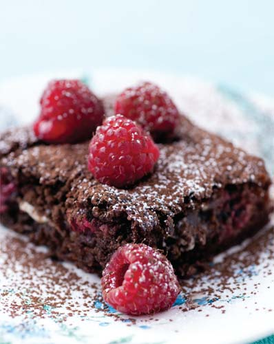
Chocolate Brownie with Raspberries and White Chocolate Chips